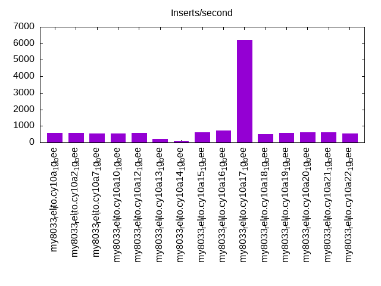
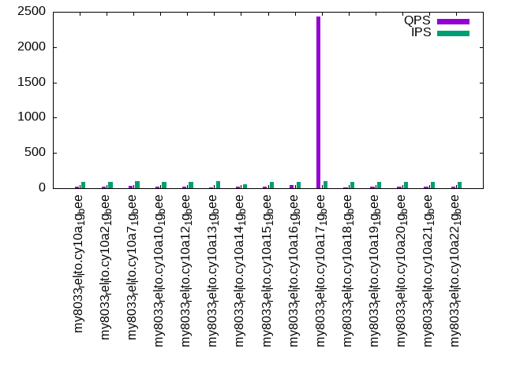
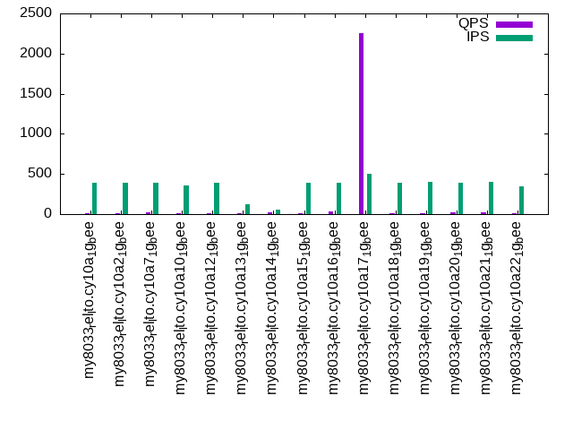

Introduction
This is a report for the insert benchmark with 20M docs and 1 client(s). It is generated by scripts (bash, awk, sed) and Tufte might not be impressed. An overview of the insert benchmark is here and a short update is here. Below, by DBMS, I mean DBMS+version.config. An example is my8020.c10b40 where my means MySQL, 8020 is version 8.0.20 and c10b40 is the name for the configuration file.
The test server has 8 AMD cores, 16G RAM and an NVMe SSD. It is described here as the Beelink. The benchmark was run with 1 client and there were 1 or 3 connections per client (1 for queries or inserts without rate limits, 1+1 for rate limited inserts+deletes). There is 1 table. It loads 20M rows without secondary indexes, creates secondary indexes, then inserts 50M rows with a delete per insert to avoid growing the table. It then does 3 read+write tests for 3600s each that do queries as fast as possible with 100, 500 and then 1000 inserts/second/client concurrent with the queries and 1000 deletes/second to avoid growing the table. The database is cached by the OS but not by InnoDB.
The tested DBMS are:
- my8033_rel_lto.cy10a_1g_bee - InnoDB and MySQL 8.0.33, rel_lto build, cy10a_1g_bee config, compiled with CMAKE_BUILD_TYPE=Release, base config
- my8033_rel_lto.cy10a2_1g_bee - InnoDB and MySQL 8.0.33, rel_lto build, cy10a2_1g_bee config, compiled with CMAKE_BUILD_TYPE=Release, adds innodb_io_capacity=20k, innodb_io_capacity_max=40k
- my8033_rel_lto.cy10a7_1g_bee - InnoDB and MySQL 8.0.33, rel_lto build, cy10a7_1g_bee config, compiled with CMAKE_BUILD_TYPE=Release, adds innodb_lru_scan_depth=2048
- my8033_rel_lto.cy10a10_1g_bee - InnoDB and MySQL 8.0.33, rel_lto build, cy10a10_1g_bee config, compiled with CMAKE_BUILD_TYPE=Release, adds innodb_purge_threads=4, innodb_read_io_threads=4, innodb_write_io_threads=4, innodb_page_cleaners=4, innodb_buffer_pool_instances=4
- my8033_rel_lto.cy10a12_1g_bee - InnoDB and MySQL 8.0.33, rel_lto build, cy10a12_1g_bee config, compiled with CMAKE_BUILD_TYPE=Release, adds innodb_redo_log_capacity=32G
- my8033_rel_lto.cy10a13_1g_bee - InnoDB and MySQL 8.0.33, rel_lto build, cy10a13_1g_bee config, compiled with CMAKE_BUILD_TYPE=Release, adds innodb_max_purge_lag=50k, innodb_max_purge_lag_delay=1M, innodb_purge_threads=4
- my8033_rel_lto.cy10a14_1g_bee - InnoDB and MySQL 8.0.33, rel_lto build, cy10a14_1g_bee config, compiled with CMAKE_BUILD_TYPE=Release, adds innodb_change_buffering=inserts
- my8033_rel_lto.cy10a15_1g_bee - InnoDB and MySQL 8.0.33, rel_lto build, cy10a15_1g_bee config, compiled with CMAKE_BUILD_TYPE=Release, adds innodb_idle_flush_pct=default
- my8033_rel_lto.cy10a16_1g_bee - InnoDB and MySQL 8.0.33, rel_lto build, cy10a16_1g_bee config, compiled with CMAKE_BUILD_TYPE=Release, adds innodb_io_capacity=2k, innodb_io_capacity_max =4k
- my8033_rel_lto.cy10a17_1g_bee - InnoDB and MySQL 8.0.33, rel_lto build, cy10a17_1g_bee config, compiled with CMAKE_BUILD_TYPE=Release, adds innodb_doublewrite=OFF
- my8033_rel_lto.cy10a18_1g_bee - InnoDB and MySQL 8.0.33, rel_lto build, cy10a18_1g_bee config, compiled with CMAKE_BUILD_TYPE=Release, adds innodb_buffer_pool_instances=2
- my8033_rel_lto.cy10a19_1g_bee - InnoDB and MySQL 8.0.33, rel_lto build, cy10a19_1g_bee config, compiled with CMAKE_BUILD_TYPE=Release, adds innodb_max_dirty_pages_pct_lwm=20, innodb_max_dirty_pages_pct=50
- my8033_rel_lto.cy10a20_1g_bee - InnoDB and MySQL 8.0.33, rel_lto build, cy10a20_1g_bee config, compiled with CMAKE_BUILD_TYPE=Release, adds innodb_max_purge_lag=200k, innodb_max_purge_lag_delay=1M, innodb_purge_threads=4
- my8033_rel_lto.cy10a21_1g_bee - InnoDB and MySQL 8.0.33, rel_lto build, cy10a21_1g_bee config, compiled with CMAKE_BUILD_TYPE=Release, adds innodb_max_purge_lag=500k, innodb_max_purge_lag_delay=1M, innodb_purge_threads=4
- my8033_rel_lto.cy10a22_1g_bee - InnoDB and MySQL 8.0.33, rel_lto build, cy10a12_1g_bee config, compiled with CMAKE_BUILD_TYPE=Release, combines a20 + a10
Contents
- Summary
- l.i0: load without secondary indexes
- l.x: create secondary indexes
- l.i1: continue load after secondary indexes created
- q100.1: range queries with 100 insert/s per client
- q500.1: range queries with 500 insert/s per client
- q1000.1: range queries with 1000 insert/s per client
Summary
The numbers are inserts/s for l.i0 and l.i1, indexed docs (or rows) /s for l.x and queries/s for q100, q500, q1000. The values are the average rate over the entire test for inserts (IPS) and queries (QPS). The range of values for IPS and QPS is split into 3 parts: bottom 25%, middle 50%, top 25%. Values in the bottom 25% have a red background, values in the top 25% have a green background and values in the middle have no color. A gray background is used for values that can be ignored because the DBMS did not sustain the target insert rate. Red backgrounds are not used when the minimum value is within 80% of the max value.
| dbms | l.i0 | l.x | l.i1 | q100.1 | q500.1 | q1000.1 |
|---|---|---|---|---|---|---|
| my8033_rel_lto.cy10a_1g_bee | 56338 | 34477 | 590 | 25 | 16 | 15 |
| my8033_rel_lto.cy10a2_1g_bee | 57471 | 48201 | 560 | 20 | 11 | 10 |
| my8033_rel_lto.cy10a7_1g_bee | 54794 | 36086 | 538 | 28 | 19 | 18 |
| my8033_rel_lto.cy10a10_1g_bee | 55249 | 34956 | 533 | 24 | 14 | 13 |
| my8033_rel_lto.cy10a12_1g_bee | 55556 | 31357 | 583 | 25 | 15 | 15 |
| my8033_rel_lto.cy10a13_1g_bee | 53050 | 34536 | 218 | 11 | 11 | 11 |
| my8033_rel_lto.cy10a14_1g_bee | 56022 | 34418 | 59 | 27 | 27 | 26 |
| my8033_rel_lto.cy10a15_1g_bee | 55402 | 61846 | 596 | 26 | 16 | 15 |
| my8033_rel_lto.cy10a16_1g_bee | 56180 | 23675 | 713 | 40 | 33 | 32 |
| my8033_rel_lto.cy10a17_1g_bee | 57637 | 150000 | 6223 | 2438 | 2251 | 2024 |
| my8033_rel_lto.cy10a18_1g_bee | 57471 | 34835 | 508 | 15 | 7 | 7 |
| my8033_rel_lto.cy10a19_1g_bee | 55866 | 41529 | 594 | 21 | 13 | 12 |
| my8033_rel_lto.cy10a20_1g_bee | 57637 | 36813 | 630 | 27 | 17 | 12 |
| my8033_rel_lto.cy10a21_1g_bee | 56022 | 36216 | 629 | 27 | 17 | 16 |
| my8033_rel_lto.cy10a22_1g_bee | 55249 | 33278 | 538 | 24 | 14 | 10 |
This table has relative throughput, throughput for the DBMS relative to the DBMS in the first line, using the absolute throughput from the previous table. Values less than 0.95 have a yellow background. Values greater than 1.05 have a blue background.
| dbms | l.i0 | l.x | l.i1 | q100.1 | q500.1 | q1000.1 |
|---|---|---|---|---|---|---|
| my8033_rel_lto.cy10a_1g_bee | 1.00 | 1.00 | 1.00 | 1.00 | 1.00 | 1.00 |
| my8033_rel_lto.cy10a2_1g_bee | 1.02 | 1.40 | 0.95 | 0.80 | 0.69 | 0.67 |
| my8033_rel_lto.cy10a7_1g_bee | 0.97 | 1.05 | 0.91 | 1.12 | 1.19 | 1.20 |
| my8033_rel_lto.cy10a10_1g_bee | 0.98 | 1.01 | 0.90 | 0.96 | 0.88 | 0.87 |
| my8033_rel_lto.cy10a12_1g_bee | 0.99 | 0.91 | 0.99 | 1.00 | 0.94 | 1.00 |
| my8033_rel_lto.cy10a13_1g_bee | 0.94 | 1.00 | 0.37 | 0.44 | 0.69 | 0.73 |
| my8033_rel_lto.cy10a14_1g_bee | 0.99 | 1.00 | 0.10 | 1.08 | 1.69 | 1.73 |
| my8033_rel_lto.cy10a15_1g_bee | 0.98 | 1.79 | 1.01 | 1.04 | 1.00 | 1.00 |
| my8033_rel_lto.cy10a16_1g_bee | 1.00 | 0.69 | 1.21 | 1.60 | 2.06 | 2.13 |
| my8033_rel_lto.cy10a17_1g_bee | 1.02 | 4.35 | 10.55 | 97.52 | 140.69 | 134.93 |
| my8033_rel_lto.cy10a18_1g_bee | 1.02 | 1.01 | 0.86 | 0.60 | 0.44 | 0.47 |
| my8033_rel_lto.cy10a19_1g_bee | 0.99 | 1.20 | 1.01 | 0.84 | 0.81 | 0.80 |
| my8033_rel_lto.cy10a20_1g_bee | 1.02 | 1.07 | 1.07 | 1.08 | 1.06 | 0.80 |
| my8033_rel_lto.cy10a21_1g_bee | 0.99 | 1.05 | 1.07 | 1.08 | 1.06 | 1.07 |
| my8033_rel_lto.cy10a22_1g_bee | 0.98 | 0.97 | 0.91 | 0.96 | 0.88 | 0.67 |
This lists the average rate of inserts/s for the tests that do inserts concurrent with queries. For such tests the query rate is listed in the table above. The read+write tests are setup so that the insert rate should match the target rate every second. Cells that are not at least 95% of the target have a red background to indicate a failure to satisfy the target.
| dbms | q100.1 | q500.1 | q1000.1 |
|---|---|---|---|
| my8033_rel_lto.cy10a_1g_bee | 88 | 388 | 410 |
| my8033_rel_lto.cy10a2_1g_bee | 88 | 396 | 428 |
| my8033_rel_lto.cy10a7_1g_bee | 97 | 389 | 375 |
| my8033_rel_lto.cy10a10_1g_bee | 88 | 352 | 364 |
| my8033_rel_lto.cy10a12_1g_bee | 89 | 388 | 412 |
| my8033_rel_lto.cy10a13_1g_bee | 96 | 118 | 101 |
| my8033_rel_lto.cy10a14_1g_bee | 53 | 53 | 53 |
| my8033_rel_lto.cy10a15_1g_bee | 91 | 395 | 415 |
| my8033_rel_lto.cy10a16_1g_bee | 94 | 386 | 414 |
| my8033_rel_lto.cy10a17_1g_bee | 100 | 499 | 998 |
| my8033_rel_lto.cy10a18_1g_bee | 87 | 387 | 382 |
| my8033_rel_lto.cy10a19_1g_bee | 87 | 400 | 445 |
| my8033_rel_lto.cy10a20_1g_bee | 89 | 395 | 265 |
| my8033_rel_lto.cy10a21_1g_bee | 90 | 399 | 427 |
| my8033_rel_lto.cy10a22_1g_bee | 87 | 349 | 224 |
| target | 100 | 500 | 1000 |
l.i0
l.i0: load without secondary indexes. Graphs for performance per 1-second interval are here.
Average throughput:

Insert response time histogram: each cell has the percentage of responses that take <= the time in the header and max is the max response time in seconds. For the max column values in the top 25% of the range have a red background and in the bottom 25% of the range have a green background. The red background is not used when the min value is within 80% of the max value.
| dbms | 256us | 1ms | 4ms | 16ms | 64ms | 256ms | 1s | 4s | 16s | gt | max |
|---|---|---|---|---|---|---|---|---|---|---|---|
| my8033_rel_lto.cy10a_1g_bee | 99.365 | 0.464 | 0.161 | 0.010 | 0.111 | ||||||
| my8033_rel_lto.cy10a2_1g_bee | 99.370 | 0.447 | 0.174 | 0.009 | 0.088 | ||||||
| my8033_rel_lto.cy10a7_1g_bee | 99.343 | 0.466 | 0.177 | 0.015 | 0.148 | ||||||
| my8033_rel_lto.cy10a10_1g_bee | 99.343 | 0.441 | 0.195 | 0.020 | 0.115 | ||||||
| my8033_rel_lto.cy10a12_1g_bee | 99.367 | 0.451 | 0.176 | 0.006 | 0.109 | ||||||
| my8033_rel_lto.cy10a13_1g_bee | 99.347 | 0.246 | 0.352 | 0.056 | 0.193 | ||||||
| my8033_rel_lto.cy10a14_1g_bee | 99.347 | 0.411 | 0.222 | 0.019 | 0.107 | ||||||
| my8033_rel_lto.cy10a15_1g_bee | 99.347 | 0.417 | 0.219 | 0.017 | 0.142 | ||||||
| my8033_rel_lto.cy10a16_1g_bee | 99.376 | 0.462 | 0.157 | 0.006 | 0.097 | ||||||
| my8033_rel_lto.cy10a17_1g_bee | 99.404 | 0.429 | 0.162 | 0.004 | 0.091 | ||||||
| my8033_rel_lto.cy10a18_1g_bee | 99.374 | 0.453 | 0.169 | 0.004 | 0.099 | ||||||
| my8033_rel_lto.cy10a19_1g_bee | 99.343 | 0.466 | 0.181 | 0.009 | 0.105 | ||||||
| my8033_rel_lto.cy10a20_1g_bee | 99.359 | 0.451 | 0.178 | 0.011 | 0.100 | ||||||
| my8033_rel_lto.cy10a21_1g_bee | 99.338 | 0.474 | 0.178 | 0.011 | 0.144 | ||||||
| my8033_rel_lto.cy10a22_1g_bee | 99.335 | 0.447 | 0.199 | 0.019 | 0.139 |
Performance metrics for the DBMS listed above. Some are normalized by throughput, others are not. Legend for results is here.
ips qps rps rmbps wps wmbps rpq rkbpq wpi wkbpi csps cpups cspq cpupq dbgb1 dbgb2 rss maxop p50 p99 tag 56338 0 0 0.0 255.2 19.7 0.000 0.000 0.005 0.358 7418 20.5 0.132 29 1.3 9.9 1.4 0.111 57090 42151 20m.my8033_rel_lto.cy10a_1g_bee 57471 0 0 0.0 260.3 20.1 0.000 0.000 0.005 0.358 7535 20.4 0.131 28 1.3 9.9 1.4 0.088 58335 38747 20m.my8033_rel_lto.cy10a2_1g_bee 54794 0 0 0.0 247.0 19.1 0.000 0.000 0.005 0.356 7200 20.0 0.131 29 1.3 9.9 1.2 0.148 55435 45049 20m.my8033_rel_lto.cy10a7_1g_bee 55249 0 0 0.0 239.7 19.2 0.000 0.000 0.004 0.355 7446 21.7 0.135 31 1.3 9.9 1.4 0.115 56039 42572 20m.my8033_rel_lto.cy10a10_1g_bee 55556 0 0 0.0 145.4 16.5 0.000 0.000 0.003 0.303 6555 20.0 0.118 29 1.3 33.9 1.4 0.109 55963 45459 20m.my8033_rel_lto.cy10a12_1g_bee 53050 0 0 0.0 238.7 18.6 0.000 0.000 0.005 0.358 7153 19.6 0.135 30 1.3 9.9 1.4 0.193 54541 35561 20m.my8033_rel_lto.cy10a13_1g_bee 56022 0 0 0.0 253.9 19.6 0.000 0.000 0.005 0.358 7377 20.3 0.132 29 1.3 9.9 1.3 0.107 57136 36940 20m.my8033_rel_lto.cy10a14_1g_bee 55402 0 0 0.0 250.6 19.3 0.000 0.000 0.005 0.357 7290 20.2 0.132 29 1.3 9.9 1.4 0.142 56238 43053 20m.my8033_rel_lto.cy10a15_1g_bee 56180 0 0 0.0 211.1 18.4 0.000 0.000 0.004 0.335 7083 20.3 0.126 29 1.3 9.9 1.4 0.097 56881 50148 20m.my8033_rel_lto.cy10a16_1g_bee 57637 0 0 0.0 61.2 17.1 0.000 0.000 0.001 0.303 6445 20.2 0.112 28 1.3 9.9 1.3 0.091 58047 41889 20m.my8033_rel_lto.cy10a17_1g_bee 57471 0 0 0.0 232.2 19.9 0.000 0.000 0.004 0.354 7569 20.8 0.132 29 1.3 9.9 1.4 0.099 57976 49745 20m.my8033_rel_lto.cy10a18_1g_bee 55866 0 0 0.0 275.8 20.2 0.000 0.000 0.005 0.371 7528 20.6 0.135 30 1.3 9.9 1.4 0.105 56771 45948 20m.my8033_rel_lto.cy10a19_1g_bee 57637 0 0 0.0 260.2 20.1 0.000 0.000 0.005 0.357 7640 20.2 0.133 28 1.3 9.9 1.4 0.100 58460 43026 20m.my8033_rel_lto.cy10a20_1g_bee 56022 0 0 0.0 254.0 19.5 0.000 0.000 0.005 0.357 7433 20.2 0.133 29 1.3 9.9 1.4 0.144 56655 45051 20m.my8033_rel_lto.cy10a21_1g_bee 55249 0 0 0.0 239.7 19.1 0.000 0.000 0.004 0.355 7471 21.6 0.135 31 1.3 9.9 1.4 0.139 56250 42455 20m.my8033_rel_lto.cy10a22_1g_bee
l.x
l.x: create secondary indexes.
Average throughput:

Performance metrics for the DBMS listed above. Some are normalized by throughput, others are not. Legend for results is here.
ips qps rps rmbps wps wmbps rpq rkbpq wpi wkbpi csps cpups cspq cpupq dbgb1 dbgb2 rss maxop p50 p99 tag 34477 0 170 11.1 733.5 36.9 0.005 0.329 0.021 1.096 5166 11.2 0.150 26 3.0 11.5 1.5 0.014 NA NA 20m.my8033_rel_lto.cy10a_1g_bee 48201 0 238 15.5 936.1 51.5 0.005 0.329 0.019 1.094 6127 15.4 0.127 26 3.0 11.5 1.5 0.040 NA NA 20m.my8033_rel_lto.cy10a2_1g_bee 36086 0 178 11.6 757.8 38.6 0.005 0.329 0.021 1.094 5172 11.6 0.143 26 3.0 11.5 1.5 0.023 NA NA 20m.my8033_rel_lto.cy10a7_1g_bee 34956 0 172 11.2 733.2 37.5 0.005 0.328 0.021 1.097 5269 11.6 0.151 27 3.0 11.5 1.5 0.070 NA NA 20m.my8033_rel_lto.cy10a10_1g_bee 31357 0 154 10.0 734.4 35.0 0.005 0.328 0.023 1.145 5083 10.5 0.162 27 3.0 35.5 1.5 0.015 NA NA 20m.my8033_rel_lto.cy10a12_1g_bee 34536 0 170 11.1 736.8 37.1 0.005 0.329 0.021 1.099 5167 11.1 0.150 26 3.0 11.5 1.5 0.020 NA NA 20m.my8033_rel_lto.cy10a13_1g_bee 34418 0 170 11.1 737.9 37.1 0.005 0.330 0.021 1.103 5178 11.1 0.150 26 3.0 11.5 1.5 0.072 NA NA 20m.my8033_rel_lto.cy10a14_1g_bee 61846 0 304 19.8 1112.5 65.8 0.005 0.328 0.018 1.089 5848 19.4 0.095 25 3.0 11.5 1.5 0.018 NA NA 20m.my8033_rel_lto.cy10a15_1g_bee 23675 0 117 7.6 594.2 25.9 0.005 0.329 0.025 1.118 4457 7.1 0.188 24 3.0 11.5 1.5 0.016 NA NA 20m.my8033_rel_lto.cy10a16_1g_bee 150000 0 759 49.5 1673.1 141.6 0.005 0.338 0.011 0.967 8852 43.8 0.059 23 3.0 11.5 1.4 0.020 NA NA 20m.my8033_rel_lto.cy10a17_1g_bee 34835 0 172 11.2 739.8 37.3 0.005 0.329 0.021 1.097 4959 11.3 0.142 26 3.0 11.5 1.5 0.012 NA NA 20m.my8033_rel_lto.cy10a18_1g_bee 41529 0 206 13.4 840.0 44.3 0.005 0.330 0.020 1.091 5257 10.4 0.127 20 3.0 11.5 1.5 0.017 NA NA 20m.my8033_rel_lto.cy10a19_1g_bee 36813 0 181 11.8 764.5 39.3 0.005 0.328 0.021 1.092 5268 11.9 0.143 26 3.0 11.5 1.5 0.012 NA NA 20m.my8033_rel_lto.cy10a20_1g_bee 36216 0 180 11.7 771.1 38.9 0.005 0.331 0.021 1.100 5364 9.8 0.148 22 3.0 11.5 1.5 0.013 NA NA 20m.my8033_rel_lto.cy10a21_1g_bee 33278 0 165 10.7 717.8 35.8 0.005 0.330 0.022 1.100 5173 11.0 0.155 26 3.0 11.5 1.5 0.017 NA NA 20m.my8033_rel_lto.cy10a22_1g_bee
l.i1
l.i1: continue load after secondary indexes created. Graphs for performance per 1-second interval are here.
Average throughput:
Insert response time histogram: each cell has the percentage of responses that take <= the time in the header and max is the max response time in seconds. For the max column values in the top 25% of the range have a red background and in the bottom 25% of the range have a green background. The red background is not used when the min value is within 80% of the max value.
| dbms | 256us | 1ms | 4ms | 16ms | 64ms | 256ms | 1s | 4s | 16s | gt | max |
|---|---|---|---|---|---|---|---|---|---|---|---|
| my8033_rel_lto.cy10a_1g_bee | 0.074 | 29.645 | 28.159 | 37.724 | 3.804 | 0.593 | 0.003 | 4.803 | |||
| my8033_rel_lto.cy10a2_1g_bee | 0.042 | 30.612 | 26.804 | 37.543 | 4.269 | 0.731 | 0.001 | 4.239 | |||
| my8033_rel_lto.cy10a7_1g_bee | 0.581 | 27.183 | 24.963 | 41.755 | 4.990 | 0.523 | 0.005 | 5.064 | |||
| my8033_rel_lto.cy10a10_1g_bee | 0.482 | 34.274 | 21.219 | 37.084 | 6.444 | 0.495 | 0.002 | 4.194 | |||
| my8033_rel_lto.cy10a12_1g_bee | 0.069 | 29.124 | 28.147 | 38.110 | 3.961 | 0.587 | 0.003 | 4.314 | |||
| my8033_rel_lto.cy10a13_1g_bee | 0.166 | 13.320 | 14.710 | 34.953 | 36.189 | 0.662 | 0.002 | 4.325 | |||
| my8033_rel_lto.cy10a14_1g_bee | 4.761 | 4.014 | 16.918 | 64.183 | 9.276 | 0.847 | 0.002 | 4.548 | |||
| my8033_rel_lto.cy10a15_1g_bee | 0.060 | 29.453 | 28.802 | 37.368 | 3.722 | 0.593 | 0.002 | 4.278 | |||
| my8033_rel_lto.cy10a16_1g_bee | 0.056 | 27.825 | 33.576 | 35.994 | 2.292 | 0.255 | 0.002 | 4.885 | |||
| my8033_rel_lto.cy10a17_1g_bee | 4.448 | 87.521 | 7.418 | 0.611 | 0.003 | 0.321 | |||||
| my8033_rel_lto.cy10a18_1g_bee | 0.035 | 29.596 | 27.095 | 36.400 | 6.085 | 0.781 | 0.009 | 5.986 | |||
| my8033_rel_lto.cy10a19_1g_bee | 0.037 | 30.851 | 27.950 | 36.931 | 3.581 | 0.648 | 0.002 | 5.572 | |||
| my8033_rel_lto.cy10a20_1g_bee | 0.126 | 30.873 | 28.812 | 36.352 | 3.338 | 0.496 | 0.002 | 4.350 | |||
| my8033_rel_lto.cy10a21_1g_bee | 0.092 | 31.047 | 28.609 | 36.384 | 3.351 | 0.515 | 0.002 | 4.926 | |||
| my8033_rel_lto.cy10a22_1g_bee | 0.504 | 34.425 | 21.604 | 36.627 | 6.336 | 0.500 | 0.003 | 4.760 |
Delete response time histogram: each cell has the percentage of responses that take <= the time in the header and max is the max response time in seconds. For the max column values in the top 25% of the range have a red background and in the bottom 25% of the range have a green background. The red background is not used when the min value is within 80% of the max value.
| dbms | 256us | 1ms | 4ms | 16ms | 64ms | 256ms | 1s | 4s | 16s | gt | max |
|---|---|---|---|---|---|---|---|---|---|---|---|
| my8033_rel_lto.cy10a_1g_bee | 1.065 | 31.434 | 29.359 | 35.991 | 2.089 | 0.061 | 0.001 | 4.058 | |||
| my8033_rel_lto.cy10a2_1g_bee | 1.288 | 32.559 | 27.908 | 35.950 | 2.175 | 0.120 | 3.367 | ||||
| my8033_rel_lto.cy10a7_1g_bee | 1.496 | 28.238 | 26.296 | 40.873 | 3.066 | 0.032 | 3.563 | ||||
| my8033_rel_lto.cy10a10_1g_bee | 2.267 | 35.552 | 21.454 | 36.831 | 3.758 | 0.140 | 2.975 | ||||
| my8033_rel_lto.cy10a12_1g_bee | 1.173 | 30.843 | 29.410 | 36.370 | 2.143 | 0.060 | 3.551 | ||||
| my8033_rel_lto.cy10a13_1g_bee | 2.305 | 13.143 | 16.369 | 34.379 | 33.648 | 0.155 | 0.001 | 4.018 | |||
| my8033_rel_lto.cy10a14_1g_bee | 0.979 | 0.861 | 1.512 | 15.121 | 51.392 | 30.104 | 0.031 | 6.228 | |||
| my8033_rel_lto.cy10a15_1g_bee | 1.091 | 31.254 | 29.834 | 35.790 | 1.980 | 0.052 | 2.693 | ||||
| my8033_rel_lto.cy10a16_1g_bee | 0.781 | 29.856 | 34.226 | 34.025 | 1.107 | 0.006 | 2.767 | ||||
| my8033_rel_lto.cy10a17_1g_bee | 40.846 | 53.683 | 5.203 | 0.267 | 0.222 | ||||||
| my8033_rel_lto.cy10a18_1g_bee | 1.204 | 31.789 | 29.398 | 33.948 | 3.423 | 0.237 | 3.183 | ||||
| my8033_rel_lto.cy10a19_1g_bee | 1.365 | 32.620 | 29.193 | 34.908 | 1.801 | 0.112 | 3.639 | ||||
| my8033_rel_lto.cy10a20_1g_bee | 1.232 | 32.553 | 30.046 | 34.371 | 1.740 | 0.060 | 3.092 | ||||
| my8033_rel_lto.cy10a21_1g_bee | 1.246 | 32.547 | 29.744 | 34.675 | 1.732 | 0.056 | 3.128 | ||||
| my8033_rel_lto.cy10a22_1g_bee | 2.502 | 35.425 | 21.732 | 36.523 | 3.678 | 0.139 | 3.003 |
Performance metrics for the DBMS listed above. Some are normalized by throughput, others are not. Legend for results is here.
ips qps rps rmbps wps wmbps rpq rkbpq wpi wkbpi csps cpups cspq cpupq dbgb1 dbgb2 rss maxop p50 p99 tag 590 0 0 0.0 918.7 16.9 0.001 0.066 1.556 29.263 5704 5.4 9.663 732 5.1 14.3 1.5 4.803 450 0 20m.my8033_rel_lto.cy10a_1g_bee 560 0 1 0.0 910.0 16.1 0.001 0.075 1.624 29.432 5704 4.9 10.178 700 5.1 14.5 1.5 4.239 499 0 20m.my8033_rel_lto.cy10a2_1g_bee 538 0 0 0.0 883.1 16.6 0.001 0.066 1.641 31.545 5507 5.3 10.233 788 5.0 14.2 1.5 5.064 400 0 20m.my8033_rel_lto.cy10a7_1g_bee 533 0 0 0.0 940.2 16.8 0.001 0.066 1.763 32.247 28624 8.6 53.674 1290 5.1 14.3 1.5 4.194 400 0 20m.my8033_rel_lto.cy10a10_1g_bee 583 0 1 0.0 912.7 16.7 0.001 0.081 1.564 29.313 5675 5.3 9.727 727 5.1 38.3 1.5 4.314 450 0 20m.my8033_rel_lto.cy10a12_1g_bee 218 0 0 0.0 788.7 13.1 0.001 0.072 3.610 61.550 10326 3.6 47.258 1318 4.7 13.6 1.5 4.325 150 0 20m.my8033_rel_lto.cy10a13_1g_bee 59 0 0 0.0 700.7 11.6 0.001 0.066 11.937 202.462 4243 2.2 72.290 2998 4.7 13.6 1.5 4.548 50 0 20m.my8033_rel_lto.cy10a14_1g_bee 596 0 1 0.0 930.4 17.0 0.001 0.084 1.561 29.257 5769 5.4 9.679 725 5.1 14.3 1.5 4.278 499 0 20m.my8033_rel_lto.cy10a15_1g_bee 713 0 1 0.0 957.3 18.8 0.001 0.067 1.342 26.986 5883 6.9 8.249 774 4.9 14.0 1.5 4.885 500 0 20m.my8033_rel_lto.cy10a16_1g_bee 6223 0 4 0.4 11645.2 214.1 0.001 0.067 1.871 35.237 33557 37.6 5.393 483 4.6 13.4 1.4 0.321 6543 1299 20m.my8033_rel_lto.cy10a17_1g_bee 508 0 0 0.0 861.2 13.8 0.001 0.066 1.694 27.746 27973 6.0 55.021 944 5.1 14.4 1.5 5.986 499 0 20m.my8033_rel_lto.cy10a18_1g_bee 594 0 0 0.0 920.1 16.5 0.001 0.065 1.549 28.408 5737 5.1 9.655 687 5.1 14.4 1.5 5.572 500 0 20m.my8033_rel_lto.cy10a19_1g_bee 630 0 0 0.0 970.7 17.9 0.001 0.065 1.539 29.105 28718 5.5 45.548 698 5.1 14.2 1.5 4.350 500 0 20m.my8033_rel_lto.cy10a20_1g_bee 629 0 0 0.0 975.5 18.1 0.001 0.066 1.550 29.375 28775 5.5 45.718 699 5.1 14.3 1.5 4.926 499 0 20m.my8033_rel_lto.cy10a21_1g_bee 538 0 0 0.0 947.6 16.9 0.001 0.066 1.761 32.204 28596 8.6 53.143 1279 5.1 14.2 1.5 4.760 400 0 20m.my8033_rel_lto.cy10a22_1g_bee
q100.1
q100.1: range queries with 100 insert/s per client. Graphs for performance per 1-second interval are here.
Average throughput:
Query response time histogram: each cell has the percentage of responses that take <= the time in the header and max is the max response time in seconds. For max values in the top 25% of the range have a red background and in the bottom 25% of the range have a green background. The red background is not used when the min value is within 80% of the max value.
| dbms | 256us | 1ms | 4ms | 16ms | 64ms | 256ms | 1s | 4s | 16s | gt | max |
|---|---|---|---|---|---|---|---|---|---|---|---|
| my8033_rel_lto.cy10a_1g_bee | 0.006 | 34.616 | 3.227 | 18.861 | 28.651 | 12.659 | 1.937 | 0.042 | 2.518 | ||
| my8033_rel_lto.cy10a2_1g_bee | 0.002 | 30.606 | 2.772 | 17.474 | 29.613 | 16.763 | 2.687 | 0.083 | 2.162 | ||
| my8033_rel_lto.cy10a7_1g_bee | 0.008 | 33.308 | 2.981 | 19.518 | 30.341 | 11.923 | 1.880 | 0.040 | 2.996 | ||
| my8033_rel_lto.cy10a10_1g_bee | 0.005 | 25.160 | 2.902 | 16.238 | 40.613 | 13.714 | 1.356 | 0.011 | 3.326 | ||
| my8033_rel_lto.cy10a12_1g_bee | 0.003 | 33.160 | 3.097 | 18.845 | 30.022 | 12.924 | 1.907 | 0.040 | 2.708 | ||
| my8033_rel_lto.cy10a13_1g_bee | 20.658 | 1.935 | 10.532 | 23.982 | 33.801 | 9.008 | 0.082 | 1.525 | |||
| my8033_rel_lto.cy10a14_1g_bee | 0.003 | 33.173 | 2.126 | 19.399 | 29.963 | 12.875 | 2.442 | 0.018 | 1.352 | ||
| my8033_rel_lto.cy10a15_1g_bee | 0.004 | 35.235 | 3.100 | 18.626 | 28.229 | 12.660 | 2.106 | 0.040 | 2.160 | ||
| my8033_rel_lto.cy10a16_1g_bee | 0.030 | 44.914 | 4.195 | 17.400 | 24.291 | 8.033 | 1.127 | 0.010 | 1.566 | ||
| my8033_rel_lto.cy10a17_1g_bee | 6.856 | 92.873 | 0.143 | 0.114 | 0.012 | 0.001 | 0.138 | ||||
| my8033_rel_lto.cy10a18_1g_bee | 24.551 | 2.084 | 9.956 | 32.700 | 27.311 | 3.367 | 0.029 | 0.002 | 4.535 | ||
| my8033_rel_lto.cy10a19_1g_bee | 0.005 | 36.515 | 2.997 | 15.074 | 26.253 | 16.590 | 2.530 | 0.037 | 2.411 | ||
| my8033_rel_lto.cy10a20_1g_bee | 0.005 | 38.597 | 3.633 | 17.559 | 26.636 | 11.674 | 1.856 | 0.039 | 1.908 | ||
| my8033_rel_lto.cy10a21_1g_bee | 0.010 | 37.889 | 3.555 | 17.375 | 27.246 | 12.089 | 1.801 | 0.036 | 3.901 | ||
| my8033_rel_lto.cy10a22_1g_bee | 0.011 | 24.776 | 2.728 | 15.901 | 40.963 | 14.221 | 1.392 | 0.009 | 2.260 |
Insert response time histogram: each cell has the percentage of responses that take <= the time in the header and max is the max response time in seconds. For max values in the top 25% of the range have a red background and in the bottom 25% of the range have a green background. The red background is not used when the min value is within 80% of the max value.
| dbms | 256us | 1ms | 4ms | 16ms | 64ms | 256ms | 1s | 4s | 16s | gt | max |
|---|---|---|---|---|---|---|---|---|---|---|---|
| my8033_rel_lto.cy10a_1g_bee | 2.222 | 4.375 | 10.000 | 64.403 | 18.972 | 0.028 | 2.551 | ||||
| my8033_rel_lto.cy10a2_1g_bee | 2.694 | 4.222 | 10.653 | 61.833 | 20.514 | 0.083 | 2.501 | ||||
| my8033_rel_lto.cy10a7_1g_bee | 1.556 | 3.417 | 9.306 | 66.139 | 19.500 | 0.083 | 3.392 | ||||
| my8033_rel_lto.cy10a10_1g_bee | 2.819 | 4.847 | 9.542 | 60.944 | 21.778 | 0.069 | 1.744 | ||||
| my8033_rel_lto.cy10a12_1g_bee | 2.000 | 4.597 | 10.528 | 64.431 | 18.375 | 0.069 | 3.089 | ||||
| my8033_rel_lto.cy10a13_1g_bee | 7.597 | 91.597 | 0.806 | 3.338 | |||||||
| my8033_rel_lto.cy10a14_1g_bee | 2.236 | 1.069 | 12.542 | 69.875 | 14.194 | 0.083 | 3.065 | ||||
| my8033_rel_lto.cy10a15_1g_bee | 2.069 | 4.903 | 10.611 | 62.083 | 20.250 | 0.083 | 2.827 | ||||
| my8033_rel_lto.cy10a16_1g_bee | 0.931 | 6.042 | 11.556 | 65.167 | 16.278 | 0.028 | 2.896 | ||||
| my8033_rel_lto.cy10a17_1g_bee | 6.083 | 91.917 | 1.736 | 0.264 | 0.176 | ||||||
| my8033_rel_lto.cy10a18_1g_bee | 7.514 | 12.319 | 18.597 | 48.819 | 12.611 | 0.139 | 2.262 | ||||
| my8033_rel_lto.cy10a19_1g_bee | 4.306 | 9.083 | 14.167 | 59.347 | 13.056 | 0.042 | 2.095 | ||||
| my8033_rel_lto.cy10a20_1g_bee | 3.139 | 4.306 | 12.056 | 62.792 | 17.597 | 0.111 | 3.327 | ||||
| my8033_rel_lto.cy10a21_1g_bee | 2.458 | 5.069 | 11.806 | 64.444 | 16.167 | 0.056 | 3.294 | ||||
| my8033_rel_lto.cy10a22_1g_bee | 2.931 | 4.514 | 8.444 | 60.986 | 23.056 | 0.069 | 2.011 |
Delete response time histogram: each cell has the percentage of responses that take <= the time in the header and max is the max response time in seconds. For max values in the top 25% of the range have a red background and in the bottom 25% of the range have a green background. The red background is not used when the min value is within 80% of the max value.
| dbms | 256us | 1ms | 4ms | 16ms | 64ms | 256ms | 1s | 4s | 16s | gt | max |
|---|---|---|---|---|---|---|---|---|---|---|---|
| my8033_rel_lto.cy10a_1g_bee | 5.556 | 2.306 | 10.986 | 64.042 | 17.028 | 0.083 | 2.619 | ||||
| my8033_rel_lto.cy10a2_1g_bee | 6.153 | 1.889 | 11.139 | 61.833 | 18.917 | 0.069 | 3.407 | ||||
| my8033_rel_lto.cy10a7_1g_bee | 3.556 | 1.653 | 9.917 | 65.569 | 19.181 | 0.125 | 3.557 | ||||
| my8033_rel_lto.cy10a10_1g_bee | 6.361 | 2.264 | 9.347 | 62.083 | 19.903 | 0.042 | 2.041 | ||||
| my8033_rel_lto.cy10a12_1g_bee | 5.625 | 1.778 | 10.792 | 65.125 | 16.597 | 0.083 | 3.435 | ||||
| my8033_rel_lto.cy10a13_1g_bee | 8.694 | 90.806 | 0.500 | 3.590 | |||||||
| my8033_rel_lto.cy10a14_1g_bee | 0.028 | 0.014 | 0.097 | 4.014 | 64.236 | 31.597 | 0.014 | 5.188 | |||
| my8033_rel_lto.cy10a15_1g_bee | 5.764 | 2.486 | 10.917 | 61.722 | 19.000 | 0.111 | 2.924 | ||||
| my8033_rel_lto.cy10a16_1g_bee | 3.208 | 3.250 | 10.778 | 65.708 | 16.986 | 0.069 | 3.200 | ||||
| my8033_rel_lto.cy10a17_1g_bee | 95.986 | 3.653 | 0.361 | 0.059 | |||||||
| my8033_rel_lto.cy10a18_1g_bee | 15.181 | 5.611 | 19.403 | 48.403 | 11.292 | 0.111 | 2.440 | ||||
| my8033_rel_lto.cy10a19_1g_bee | 10.875 | 3.583 | 15.222 | 58.472 | 11.792 | 0.056 | 3.180 | ||||
| my8033_rel_lto.cy10a20_1g_bee | 5.750 | 2.139 | 12.806 | 62.736 | 16.417 | 0.153 | 3.478 | ||||
| my8033_rel_lto.cy10a21_1g_bee | 6.528 | 2.208 | 12.667 | 63.361 | 15.153 | 0.083 | 3.160 | ||||
| my8033_rel_lto.cy10a22_1g_bee | 6.653 | 2.153 | 9.319 | 61.264 | 20.528 | 0.083 | 2.133 |
Performance metrics for the DBMS listed above. Some are normalized by throughput, others are not. Legend for results is here.
ips qps rps rmbps wps wmbps rpq rkbpq wpi wkbpi csps cpups cspq cpupq dbgb1 dbgb2 rss maxop p50 p99 tag 88 25 1 0.0 660.8 11.1 0.054 1.005 7.475 128.018 4299 2.7 170.592 8572 5.1 14.3 1.5 2.518 16 0 20m.my8033_rel_lto.cy10a_1g_bee 88 20 2 0.1 661.3 11.0 0.117 4.032 7.523 127.571 4329 2.6 217.555 10453 5.1 14.5 1.5 2.162 16 0 20m.my8033_rel_lto.cy10a2_1g_bee 97 28 2 0.0 674.4 11.6 0.062 1.169 6.939 122.382 4392 2.8 155.732 7944 5.0 14.2 1.5 2.996 16 0 20m.my8033_rel_lto.cy10a7_1g_bee 88 24 2 0.0 677.4 11.7 0.071 1.296 7.742 136.751 27918 4.3 1144.197 14098 5.1 14.3 1.5 3.326 32 0 20m.my8033_rel_lto.cy10a10_1g_bee 89 25 2 0.1 656.7 11.0 0.090 2.913 7.387 127.182 4306 2.7 172.259 8640 5.1 38.3 1.5 2.708 16 0 20m.my8033_rel_lto.cy10a12_1g_bee 96 11 2 0.0 690.6 10.6 0.143 2.707 7.216 113.674 5855 3.0 552.363 22641 4.7 13.6 1.5 1.525 16 0 20m.my8033_rel_lto.cy10a13_1g_bee 53 27 1 0.0 657.0 10.6 0.039 0.723 12.419 205.016 4323 2.4 162.509 7218 4.7 13.6 1.5 1.352 16 0 20m.my8033_rel_lto.cy10a14_1g_bee 91 26 2 0.1 666.0 11.2 0.081 2.819 7.318 125.987 4317 2.7 168.638 8438 5.1 14.3 1.5 2.160 16 0 20m.my8033_rel_lto.cy10a15_1g_bee 94 40 1 0.0 678.5 11.6 0.035 0.675 7.210 125.688 4304 2.9 108.951 5873 4.9 14.0 1.5 1.566 32 0 20m.my8033_rel_lto.cy10a16_1g_bee 100 2438 0 0.0 2010.8 32.4 0.000 0.004 20.148 331.956 15384 14.6 6.310 479 4.6 13.4 1.4 0.138 2493 1343 20m.my8033_rel_lto.cy10a17_1g_bee 87 15 1 0.0 614.2 9.2 0.038 0.850 7.093 109.038 26358 3.1 1768.976 16644 5.1 14.4 1.5 4.535 16 0 20m.my8033_rel_lto.cy10a18_1g_bee 87 21 1 0.0 676.5 11.1 0.046 0.935 7.785 130.869 4291 2.5 205.318 9569 5.1 14.4 1.5 2.411 16 0 20m.my8033_rel_lto.cy10a19_1g_bee 89 27 1 0.0 682.6 11.4 0.049 0.935 7.695 131.876 27863 2.5 1020.617 7326 5.1 14.3 1.5 1.908 16 0 20m.my8033_rel_lto.cy10a20_1g_bee 90 27 1 0.0 686.1 11.5 0.048 0.913 7.598 130.936 27951 2.6 1020.093 7591 5.1 14.3 1.5 3.901 16 0 20m.my8033_rel_lto.cy10a21_1g_bee 87 24 2 0.0 673.4 11.6 0.072 1.326 7.713 136.052 27848 4.3 1165.181 14394 5.1 14.3 1.5 2.260 32 0 20m.my8033_rel_lto.cy10a22_1g_bee
q500.1
q500.1: range queries with 500 insert/s per client. Graphs for performance per 1-second interval are here.
Average throughput:
Query response time histogram: each cell has the percentage of responses that take <= the time in the header and max is the max response time in seconds. For max values in the top 25% of the range have a red background and in the bottom 25% of the range have a green background. The red background is not used when the min value is within 80% of the max value.
| dbms | 256us | 1ms | 4ms | 16ms | 64ms | 256ms | 1s | 4s | 16s | gt | max |
|---|---|---|---|---|---|---|---|---|---|---|---|
| my8033_rel_lto.cy10a_1g_bee | 0.001 | 22.632 | 7.258 | 13.805 | 29.035 | 22.631 | 4.598 | 0.040 | 2.395 | ||
| my8033_rel_lto.cy10a2_1g_bee | 18.366 | 6.389 | 10.119 | 24.005 | 32.998 | 8.020 | 0.103 | 3.577 | |||
| my8033_rel_lto.cy10a7_1g_bee | 0.005 | 22.488 | 6.482 | 15.986 | 31.923 | 19.396 | 3.670 | 0.050 | 2.512 | ||
| my8033_rel_lto.cy10a10_1g_bee | 0.003 | 21.329 | 6.686 | 10.112 | 31.894 | 23.808 | 6.127 | 0.042 | 3.444 | ||
| my8033_rel_lto.cy10a12_1g_bee | 21.888 | 6.864 | 13.847 | 29.457 | 23.356 | 4.528 | 0.060 | 1.881 | |||
| my8033_rel_lto.cy10a13_1g_bee | 0.002 | 20.849 | 2.271 | 10.517 | 24.412 | 32.852 | 9.021 | 0.075 | 2.533 | ||
| my8033_rel_lto.cy10a14_1g_bee | 0.004 | 32.985 | 2.066 | 19.426 | 29.988 | 13.040 | 2.472 | 0.020 | 3.269 | ||
| my8033_rel_lto.cy10a15_1g_bee | 0.003 | 23.113 | 7.619 | 13.624 | 28.246 | 22.616 | 4.710 | 0.070 | 2.055 | ||
| my8033_rel_lto.cy10a16_1g_bee | 0.012 | 37.702 | 10.426 | 14.767 | 25.203 | 10.431 | 1.449 | 0.012 | 2.578 | ||
| my8033_rel_lto.cy10a17_1g_bee | 4.351 | 95.192 | 0.142 | 0.254 | 0.060 | 0.001 | 0.112 | ||||
| my8033_rel_lto.cy10a18_1g_bee | 16.313 | 6.386 | 5.088 | 20.426 | 36.292 | 15.381 | 0.115 | 3.503 | |||
| my8033_rel_lto.cy10a19_1g_bee | 21.094 | 7.817 | 11.351 | 25.862 | 27.247 | 6.550 | 0.080 | 3.012 | |||
| my8033_rel_lto.cy10a20_1g_bee | 0.003 | 26.302 | 7.383 | 13.896 | 28.273 | 20.084 | 4.000 | 0.060 | 2.373 | ||
| my8033_rel_lto.cy10a21_1g_bee | 0.004 | 25.592 | 7.380 | 13.827 | 28.756 | 20.230 | 4.153 | 0.057 | 3.055 | ||
| my8033_rel_lto.cy10a22_1g_bee | 0.007 | 21.742 | 6.785 | 9.790 | 31.437 | 24.070 | 6.106 | 0.062 | 2.765 |
Insert response time histogram: each cell has the percentage of responses that take <= the time in the header and max is the max response time in seconds. For max values in the top 25% of the range have a red background and in the bottom 25% of the range have a green background. The red background is not used when the min value is within 80% of the max value.
| dbms | 256us | 1ms | 4ms | 16ms | 64ms | 256ms | 1s | 4s | 16s | gt | max |
|---|---|---|---|---|---|---|---|---|---|---|---|
| my8033_rel_lto.cy10a_1g_bee | 0.392 | 21.858 | 16.689 | 53.014 | 7.950 | 0.097 | 2.856 | ||||
| my8033_rel_lto.cy10a2_1g_bee | 0.597 | 26.586 | 16.394 | 48.517 | 7.783 | 0.122 | 3.380 | ||||
| my8033_rel_lto.cy10a7_1g_bee | 0.192 | 15.689 | 15.728 | 59.450 | 8.897 | 0.044 | 2.900 | ||||
| my8033_rel_lto.cy10a10_1g_bee | 0.906 | 24.469 | 14.228 | 48.406 | 11.786 | 0.206 | 2.556 | ||||
| my8033_rel_lto.cy10a12_1g_bee | 0.311 | 21.492 | 16.300 | 54.164 | 7.664 | 0.069 | 3.072 | ||||
| my8033_rel_lto.cy10a13_1g_bee | 0.314 | 1.114 | 2.675 | 21.800 | 73.031 | 1.067 | 3.833 | ||||
| my8033_rel_lto.cy10a14_1g_bee | 1.792 | 1.197 | 12.767 | 72.183 | 11.986 | 0.075 | 3.015 | ||||
| my8033_rel_lto.cy10a15_1g_bee | 0.603 | 21.628 | 16.956 | 52.611 | 8.142 | 0.061 | 3.213 | ||||
| my8033_rel_lto.cy10a16_1g_bee | 0.183 | 13.231 | 17.847 | 61.614 | 7.100 | 0.025 | 2.903 | ||||
| my8033_rel_lto.cy10a17_1g_bee | 9.147 | 89.883 | 0.825 | 0.144 | 0.170 | ||||||
| my8033_rel_lto.cy10a18_1g_bee | 1.181 | 28.983 | 18.450 | 40.864 | 10.264 | 0.258 | 3.519 | ||||
| my8033_rel_lto.cy10a19_1g_bee | 0.658 | 26.561 | 16.697 | 48.556 | 7.428 | 0.100 | 3.191 | ||||
| my8033_rel_lto.cy10a20_1g_bee | 0.628 | 22.275 | 17.497 | 51.944 | 7.564 | 0.092 | 3.384 | ||||
| my8033_rel_lto.cy10a21_1g_bee | 0.497 | 22.806 | 16.817 | 52.614 | 7.183 | 0.083 | 3.291 | ||||
| my8033_rel_lto.cy10a22_1g_bee | 1.069 | 24.944 | 13.919 | 47.683 | 12.150 | 0.233 | 3.131 |
Delete response time histogram: each cell has the percentage of responses that take <= the time in the header and max is the max response time in seconds. For max values in the top 25% of the range have a red background and in the bottom 25% of the range have a green background. The red background is not used when the min value is within 80% of the max value.
| dbms | 256us | 1ms | 4ms | 16ms | 64ms | 256ms | 1s | 4s | 16s | gt | max |
|---|---|---|---|---|---|---|---|---|---|---|---|
| my8033_rel_lto.cy10a_1g_bee | 5.442 | 18.081 | 17.069 | 52.228 | 7.072 | 0.108 | 3.072 | ||||
| my8033_rel_lto.cy10a2_1g_bee | 4.203 | 25.122 | 16.586 | 47.344 | 6.617 | 0.128 | 3.283 | ||||
| my8033_rel_lto.cy10a7_1g_bee | 6.136 | 10.494 | 16.486 | 58.725 | 8.108 | 0.050 | 3.354 | ||||
| my8033_rel_lto.cy10a10_1g_bee | 11.069 | 15.964 | 14.119 | 48.200 | 10.389 | 0.258 | 3.429 | ||||
| my8033_rel_lto.cy10a12_1g_bee | 6.042 | 17.433 | 16.394 | 53.228 | 6.811 | 0.092 | 3.331 | ||||
| my8033_rel_lto.cy10a13_1g_bee | 1.608 | 0.239 | 2.911 | 23.119 | 71.461 | 0.661 | 3.820 | ||||
| my8033_rel_lto.cy10a14_1g_bee | 0.031 | 0.025 | 0.072 | 3.689 | 64.425 | 31.733 | 0.025 | 5.504 | |||
| my8033_rel_lto.cy10a15_1g_bee | 5.094 | 19.231 | 17.286 | 51.114 | 7.200 | 0.075 | 3.414 | ||||
| my8033_rel_lto.cy10a16_1g_bee | 1.436 | 12.750 | 17.667 | 61.425 | 6.683 | 0.039 | 3.001 | ||||
| my8033_rel_lto.cy10a17_1g_bee | 96.567 | 3.153 | 0.281 | 0.057 | |||||||
| my8033_rel_lto.cy10a18_1g_bee | 4.481 | 28.683 | 18.644 | 39.356 | 8.572 | 0.264 | 3.375 | ||||
| my8033_rel_lto.cy10a19_1g_bee | 4.369 | 24.769 | 16.786 | 47.356 | 6.603 | 0.117 | 3.543 | ||||
| my8033_rel_lto.cy10a20_1g_bee | 6.364 | 18.153 | 18.028 | 50.989 | 6.358 | 0.108 | 3.340 | ||||
| my8033_rel_lto.cy10a21_1g_bee | 6.219 | 18.400 | 17.728 | 51.344 | 6.206 | 0.103 | 3.444 | ||||
| my8033_rel_lto.cy10a22_1g_bee | 12.161 | 15.478 | 14.281 | 47.133 | 10.672 | 0.275 | 3.172 |
Performance metrics for the DBMS listed above. Some are normalized by throughput, others are not. Legend for results is here.
ips qps rps rmbps wps wmbps rpq rkbpq wpi wkbpi csps cpups cspq cpupq dbgb1 dbgb2 rss maxop p50 p99 tag 388 16 2 0.0 672.0 11.4 0.111 2.177 1.734 30.202 4424 3.8 283.615 19487 5.2 14.5 1.5 2.395 16 0 20m.my8033_rel_lto.cy10a_1g_bee 396 11 3 0.0 681.3 11.3 0.247 4.413 1.720 29.240 4452 3.6 416.098 26916 5.3 14.6 1.4 3.577 16 0 20m.my8033_rel_lto.cy10a2_1g_bee 389 19 2 0.0 676.3 11.9 0.127 2.284 1.738 31.429 4504 4.0 237.067 16842 5.1 14.4 1.5 2.512 16 0 20m.my8033_rel_lto.cy10a7_1g_bee 352 14 2 0.0 701.3 11.8 0.113 2.162 1.995 34.327 27782 7.5 2042.776 44118 5.2 14.6 1.5 3.444 16 0 20m.my8033_rel_lto.cy10a10_1g_bee 388 15 3 0.0 673.4 11.4 0.189 3.090 1.733 30.173 4439 3.8 288.235 19740 5.2 38.6 1.5 1.881 16 0 20m.my8033_rel_lto.cy10a12_1g_bee 118 11 1 0.0 690.1 10.7 0.098 1.663 5.848 92.712 6188 3.0 557.496 21622 4.7 13.7 1.5 2.533 16 0 20m.my8033_rel_lto.cy10a13_1g_bee 53 27 1 0.0 656.6 10.6 0.027 0.469 12.388 204.712 4321 2.4 162.438 7218 4.7 13.7 1.5 3.269 16 0 20m.my8033_rel_lto.cy10a14_1g_bee 395 16 3 0.0 675.8 11.5 0.177 2.969 1.713 29.851 4439 3.8 282.740 19362 5.2 14.5 1.4 2.055 16 0 20m.my8033_rel_lto.cy10a15_1g_bee 386 33 3 0.0 671.0 11.9 0.080 1.367 1.739 31.590 4428 4.2 132.578 10060 5.0 14.2 1.5 2.578 32 0 20m.my8033_rel_lto.cy10a16_1g_bee 499 2251 4 0.1 2795.0 45.6 0.002 0.031 5.600 93.593 16813 15.9 7.470 565 4.6 13.4 1.4 0.112 2238 2014 20m.my8033_rel_lto.cy10a17_1g_bee 387 7 1 0.0 631.7 9.5 0.149 4.391 1.634 25.049 27330 5.1 3693.274 55134 5.3 14.7 1.5 3.503 0 0 20m.my8033_rel_lto.cy10a18_1g_bee 400 13 2 0.0 681.1 11.4 0.122 2.642 1.704 29.277 4436 3.7 346.546 23125 5.2 14.6 1.5 3.012 16 0 20m.my8033_rel_lto.cy10a19_1g_bee 395 17 2 0.0 705.1 12.0 0.114 2.201 1.785 31.161 27136 3.7 1577.680 17210 5.2 14.5 1.5 2.373 16 0 20m.my8033_rel_lto.cy10a20_1g_bee 399 17 2 0.0 701.2 12.0 0.128 2.409 1.756 30.665 27334 3.7 1617.387 17515 5.2 14.5 1.5 3.055 16 0 20m.my8033_rel_lto.cy10a21_1g_bee 349 14 2 0.0 700.8 11.8 0.110 2.125 2.007 34.546 27870 7.5 2064.408 44444 5.2 14.5 1.5 2.765 16 0 20m.my8033_rel_lto.cy10a22_1g_bee
q1000.1
q1000.1: range queries with 1000 insert/s per client. Graphs for performance per 1-second interval are here.
Average throughput:
Query response time histogram: each cell has the percentage of responses that take <= the time in the header and max is the max response time in seconds. For max values in the top 25% of the range have a red background and in the bottom 25% of the range have a green background. The red background is not used when the min value is within 80% of the max value.
| dbms | 256us | 1ms | 4ms | 16ms | 64ms | 256ms | 1s | 4s | 16s | gt | max |
|---|---|---|---|---|---|---|---|---|---|---|---|
| my8033_rel_lto.cy10a_1g_bee | 0.003 | 20.046 | 7.788 | 13.028 | 29.171 | 24.712 | 5.181 | 0.071 | 3.719 | ||
| my8033_rel_lto.cy10a2_1g_bee | 0.002 | 15.246 | 7.073 | 8.652 | 23.436 | 35.920 | 9.523 | 0.148 | 0.001 | 4.092 | |
| my8033_rel_lto.cy10a7_1g_bee | 0.002 | 20.802 | 6.617 | 15.375 | 32.409 | 20.683 | 4.045 | 0.067 | 3.896 | ||
| my8033_rel_lto.cy10a10_1g_bee | 0.008 | 20.483 | 7.178 | 9.425 | 31.192 | 25.026 | 6.614 | 0.072 | 0.002 | 5.365 | |
| my8033_rel_lto.cy10a12_1g_bee | 20.326 | 7.594 | 13.006 | 29.326 | 24.602 | 5.067 | 0.080 | 3.340 | |||
| my8033_rel_lto.cy10a13_1g_bee | 0.002 | 20.491 | 2.038 | 10.502 | 24.292 | 33.513 | 9.049 | 0.114 | 1.966 | ||
| my8033_rel_lto.cy10a14_1g_bee | 0.004 | 32.824 | 2.035 | 19.420 | 30.362 | 12.858 | 2.470 | 0.027 | 2.821 | ||
| my8033_rel_lto.cy10a15_1g_bee | 20.371 | 8.039 | 13.029 | 28.966 | 24.324 | 5.188 | 0.084 | 2.933 | |||
| my8033_rel_lto.cy10a16_1g_bee | 0.023 | 33.964 | 11.804 | 14.161 | 27.085 | 11.516 | 1.433 | 0.013 | 1.914 | ||
| my8033_rel_lto.cy10a17_1g_bee | 3.694 | 95.326 | 0.423 | 0.455 | 0.096 | 0.007 | 0.124 | ||||
| my8033_rel_lto.cy10a18_1g_bee | 12.940 | 7.058 | 4.111 | 17.991 | 39.427 | 18.335 | 0.137 | 0.002 | 4.587 | ||
| my8033_rel_lto.cy10a19_1g_bee | 17.718 | 8.957 | 10.084 | 25.489 | 30.534 | 7.112 | 0.104 | 0.001 | 4.509 | ||
| my8033_rel_lto.cy10a20_1g_bee | 0.001 | 19.814 | 6.062 | 11.569 | 26.530 | 27.800 | 8.093 | 0.132 | 3.686 | ||
| my8033_rel_lto.cy10a21_1g_bee | 0.004 | 22.853 | 8.179 | 12.880 | 29.818 | 21.680 | 4.497 | 0.089 | 3.577 | ||
| my8033_rel_lto.cy10a22_1g_bee | 0.001 | 14.107 | 3.829 | 9.231 | 31.722 | 31.391 | 9.573 | 0.142 | 0.004 | 5.402 |
Insert response time histogram: each cell has the percentage of responses that take <= the time in the header and max is the max response time in seconds. For max values in the top 25% of the range have a red background and in the bottom 25% of the range have a green background. The red background is not used when the min value is within 80% of the max value.
| dbms | 256us | 1ms | 4ms | 16ms | 64ms | 256ms | 1s | 4s | 16s | gt | max |
|---|---|---|---|---|---|---|---|---|---|---|---|
| my8033_rel_lto.cy10a_1g_bee | 0.031 | 21.950 | 15.515 | 53.490 | 8.922 | 0.092 | 3.483 | ||||
| my8033_rel_lto.cy10a2_1g_bee | 0.040 | 26.824 | 15.950 | 47.987 | 9.088 | 0.111 | 3.714 | ||||
| my8033_rel_lto.cy10a7_1g_bee | 0.043 | 15.396 | 14.585 | 59.262 | 10.662 | 0.051 | 3.284 | ||||
| my8033_rel_lto.cy10a10_1g_bee | 0.153 | 24.450 | 14.033 | 47.486 | 13.703 | 0.175 | 3.166 | ||||
| my8033_rel_lto.cy10a12_1g_bee | 0.031 | 21.761 | 15.706 | 53.382 | 9.039 | 0.082 | 3.607 | ||||
| my8033_rel_lto.cy10a13_1g_bee | 0.417 | 14.243 | 83.703 | 1.638 | 3.840 | ||||||
| my8033_rel_lto.cy10a14_1g_bee | 2.293 | 1.203 | 13.368 | 73.008 | 10.044 | 0.083 | 3.654 | ||||
| my8033_rel_lto.cy10a15_1g_bee | 0.049 | 21.967 | 15.772 | 52.987 | 9.135 | 0.090 | 3.434 | ||||
| my8033_rel_lto.cy10a16_1g_bee | 0.040 | 15.318 | 17.660 | 59.728 | 7.219 | 0.035 | 2.991 | ||||
| my8033_rel_lto.cy10a17_1g_bee | 15.654 | 80.674 | 2.281 | 1.392 | 0.198 | ||||||
| my8033_rel_lto.cy10a18_1g_bee | 0.068 | 26.799 | 17.546 | 42.779 | 12.529 | 0.279 | 3.052 | ||||
| my8033_rel_lto.cy10a19_1g_bee | 0.018 | 26.867 | 17.100 | 47.947 | 7.942 | 0.126 | 3.543 | ||||
| my8033_rel_lto.cy10a20_1g_bee | 0.022 | 11.886 | 12.097 | 52.457 | 23.365 | 0.172 | 3.599 | ||||
| my8033_rel_lto.cy10a21_1g_bee | 0.078 | 22.628 | 16.724 | 52.386 | 8.111 | 0.074 | 3.281 | ||||
| my8033_rel_lto.cy10a22_1g_bee | 0.107 | 10.206 | 10.764 | 45.196 | 33.401 | 0.326 | 3.244 |
Delete response time histogram: each cell has the percentage of responses that take <= the time in the header and max is the max response time in seconds. For max values in the top 25% of the range have a red background and in the bottom 25% of the range have a green background. The red background is not used when the min value is within 80% of the max value.
| dbms | 256us | 1ms | 4ms | 16ms | 64ms | 256ms | 1s | 4s | 16s | gt | max |
|---|---|---|---|---|---|---|---|---|---|---|---|
| my8033_rel_lto.cy10a_1g_bee | 2.165 | 22.851 | 16.139 | 51.244 | 7.494 | 0.106 | 3.452 | ||||
| my8033_rel_lto.cy10a2_1g_bee | 1.244 | 29.350 | 16.444 | 45.750 | 7.086 | 0.125 | 3.863 | ||||
| my8033_rel_lto.cy10a7_1g_bee | 5.104 | 12.375 | 15.347 | 58.131 | 8.992 | 0.051 | 3.397 | ||||
| my8033_rel_lto.cy10a10_1g_bee | 7.785 | 20.033 | 14.524 | 46.056 | 11.400 | 0.203 | 3.009 | ||||
| my8033_rel_lto.cy10a12_1g_bee | 2.972 | 21.617 | 16.483 | 51.304 | 7.528 | 0.096 | 3.701 | ||||
| my8033_rel_lto.cy10a13_1g_bee | 0.464 | 14.878 | 83.386 | 1.271 | 0.001 | 4.019 | |||||
| my8033_rel_lto.cy10a14_1g_bee | 0.021 | 0.021 | 0.074 | 3.626 | 64.535 | 31.689 | 0.035 | 5.992 | |||
| my8033_rel_lto.cy10a15_1g_bee | 1.644 | 23.229 | 16.442 | 51.031 | 7.544 | 0.110 | 3.844 | ||||
| my8033_rel_lto.cy10a16_1g_bee | 0.168 | 16.221 | 17.812 | 59.061 | 6.693 | 0.044 | 3.753 | ||||
| my8033_rel_lto.cy10a17_1g_bee | 95.040 | 4.440 | 0.518 | 0.001 | 0.066 | ||||||
| my8033_rel_lto.cy10a18_1g_bee | 0.522 | 30.479 | 18.513 | 40.311 | 9.907 | 0.268 | 3.252 | ||||
| my8033_rel_lto.cy10a19_1g_bee | 0.769 | 29.354 | 17.494 | 45.817 | 6.436 | 0.129 | 3.596 | ||||
| my8033_rel_lto.cy10a20_1g_bee | 1.333 | 11.979 | 12.514 | 53.117 | 20.944 | 0.112 | 3.716 | ||||
| my8033_rel_lto.cy10a21_1g_bee | 3.140 | 22.633 | 16.917 | 50.590 | 6.636 | 0.083 | 3.272 | ||||
| my8033_rel_lto.cy10a22_1g_bee | 4.519 | 7.382 | 11.025 | 46.579 | 30.211 | 0.283 | 3.342 |
Performance metrics for the DBMS listed above. Some are normalized by throughput, others are not. Legend for results is here.
ips qps rps rmbps wps wmbps rpq rkbpq wpi wkbpi csps cpups cspq cpupq dbgb1 dbgb2 rss maxop p50 p99 tag 410 15 2 0.0 671.1 11.5 0.127 2.566 1.636 28.770 4451 4.0 302.760 21769 5.4 15.0 1.5 3.719 16 0 20m.my8033_rel_lto.cy10a_1g_bee 428 10 2 0.0 679.6 11.3 0.176 4.180 1.587 27.116 4484 3.9 462.293 32164 5.5 15.2 1.3 4.092 16 0 20m.my8033_rel_lto.cy10a2_1g_bee 375 18 2 0.0 663.1 11.7 0.121 2.080 1.767 31.900 4451 4.0 254.315 18286 5.4 14.9 1.5 3.896 16 0 20m.my8033_rel_lto.cy10a7_1g_bee 364 13 2 0.0 707.6 11.9 0.138 2.782 1.946 33.622 27295 7.9 2052.232 47519 5.4 14.9 1.5 5.365 16 0 20m.my8033_rel_lto.cy10a10_1g_bee 412 15 2 0.0 679.3 11.6 0.154 2.954 1.647 28.799 4505 4.0 304.365 21622 5.4 38.9 1.3 3.340 16 0 20m.my8033_rel_lto.cy10a12_1g_bee 101 11 1 0.0 689.8 10.6 0.070 1.126 6.810 107.505 5661 2.9 519.319 21285 4.7 13.7 1.3 1.966 16 0 20m.my8033_rel_lto.cy10a13_1g_bee 53 26 0 0.0 653.5 10.6 0.011 0.201 12.283 203.247 4306 2.4 162.499 7245 4.8 13.8 1.4 2.821 16 0 20m.my8033_rel_lto.cy10a14_1g_bee 415 15 2 0.0 677.5 11.7 0.141 2.661 1.631 28.776 4480 4.0 298.660 21333 5.4 15.0 1.3 2.933 16 0 20m.my8033_rel_lto.cy10a15_1g_bee 414 32 2 0.0 669.4 12.0 0.075 1.280 1.619 29.800 4427 4.5 137.908 11215 5.2 14.5 1.5 1.914 32 0 20m.my8033_rel_lto.cy10a16_1g_bee 998 2024 6 0.1 4496.2 74.3 0.003 0.053 4.504 76.255 21116 18.2 10.432 719 4.6 13.4 1.4 0.124 2030 1742 20m.my8033_rel_lto.cy10a17_1g_bee 382 7 1 0.0 637.6 9.5 0.187 5.252 1.667 25.530 25889 5.4 3807.218 63529 5.5 15.2 1.5 4.587 0 0 20m.my8033_rel_lto.cy10a18_1g_bee 445 12 2 0.0 690.9 11.6 0.150 3.558 1.552 26.750 4534 4.1 384.256 27796 5.5 15.1 1.4 4.509 16 0 20m.my8033_rel_lto.cy10a19_1g_bee 265 12 2 0.0 700.6 11.3 0.150 3.081 2.643 43.693 12103 3.6 1043.388 24828 5.3 14.8 1.5 3.686 16 0 20m.my8033_rel_lto.cy10a20_1g_bee 427 16 2 0.0 704.0 12.1 0.131 2.642 1.648 29.059 27876 4.0 1720.764 19753 5.4 14.9 1.5 3.577 16 0 20m.my8033_rel_lto.cy10a21_1g_bee 224 10 2 0.0 719.0 11.6 0.157 3.153 3.214 53.265 11939 7.3 1170.514 57255 5.3 14.8 1.5 5.402 16 0 20m.my8033_rel_lto.cy10a22_1g_bee
l.i0
l.i0: load without secondary indexes
Performance metrics for all DBMS, not just the ones listed above. Some are normalized by throughput, others are not. Legend for results is here.
ips qps rps rmbps wps wmbps rpq rkbpq wpi wkbpi csps cpups cspq cpupq dbgb1 dbgb2 rss maxop p50 p99 tag 56338 0 0 0.0 255.2 19.7 0.000 0.000 0.005 0.358 7418 20.5 0.132 29 1.3 9.9 1.4 0.111 57090 42151 20m.my8033_rel_lto.cy10a_1g_bee 57471 0 0 0.0 260.3 20.1 0.000 0.000 0.005 0.358 7535 20.4 0.131 28 1.3 9.9 1.4 0.088 58335 38747 20m.my8033_rel_lto.cy10a2_1g_bee 54794 0 0 0.0 247.0 19.1 0.000 0.000 0.005 0.356 7200 20.0 0.131 29 1.3 9.9 1.2 0.148 55435 45049 20m.my8033_rel_lto.cy10a7_1g_bee 55249 0 0 0.0 239.7 19.2 0.000 0.000 0.004 0.355 7446 21.7 0.135 31 1.3 9.9 1.4 0.115 56039 42572 20m.my8033_rel_lto.cy10a10_1g_bee 55556 0 0 0.0 145.4 16.5 0.000 0.000 0.003 0.303 6555 20.0 0.118 29 1.3 33.9 1.4 0.109 55963 45459 20m.my8033_rel_lto.cy10a12_1g_bee 53050 0 0 0.0 238.7 18.6 0.000 0.000 0.005 0.358 7153 19.6 0.135 30 1.3 9.9 1.4 0.193 54541 35561 20m.my8033_rel_lto.cy10a13_1g_bee 56022 0 0 0.0 253.9 19.6 0.000 0.000 0.005 0.358 7377 20.3 0.132 29 1.3 9.9 1.3 0.107 57136 36940 20m.my8033_rel_lto.cy10a14_1g_bee 55402 0 0 0.0 250.6 19.3 0.000 0.000 0.005 0.357 7290 20.2 0.132 29 1.3 9.9 1.4 0.142 56238 43053 20m.my8033_rel_lto.cy10a15_1g_bee 56180 0 0 0.0 211.1 18.4 0.000 0.000 0.004 0.335 7083 20.3 0.126 29 1.3 9.9 1.4 0.097 56881 50148 20m.my8033_rel_lto.cy10a16_1g_bee 57637 0 0 0.0 61.2 17.1 0.000 0.000 0.001 0.303 6445 20.2 0.112 28 1.3 9.9 1.3 0.091 58047 41889 20m.my8033_rel_lto.cy10a17_1g_bee 57471 0 0 0.0 232.2 19.9 0.000 0.000 0.004 0.354 7569 20.8 0.132 29 1.3 9.9 1.4 0.099 57976 49745 20m.my8033_rel_lto.cy10a18_1g_bee 55866 0 0 0.0 275.8 20.2 0.000 0.000 0.005 0.371 7528 20.6 0.135 30 1.3 9.9 1.4 0.105 56771 45948 20m.my8033_rel_lto.cy10a19_1g_bee 57637 0 0 0.0 260.2 20.1 0.000 0.000 0.005 0.357 7640 20.2 0.133 28 1.3 9.9 1.4 0.100 58460 43026 20m.my8033_rel_lto.cy10a20_1g_bee 56022 0 0 0.0 254.0 19.5 0.000 0.000 0.005 0.357 7433 20.2 0.133 29 1.3 9.9 1.4 0.144 56655 45051 20m.my8033_rel_lto.cy10a21_1g_bee 55249 0 0 0.0 239.7 19.1 0.000 0.000 0.004 0.355 7471 21.6 0.135 31 1.3 9.9 1.4 0.139 56250 42455 20m.my8033_rel_lto.cy10a22_1g_bee
l.x
l.x: create secondary indexes
Performance metrics for all DBMS, not just the ones listed above. Some are normalized by throughput, others are not. Legend for results is here.
ips qps rps rmbps wps wmbps rpq rkbpq wpi wkbpi csps cpups cspq cpupq dbgb1 dbgb2 rss maxop p50 p99 tag 34477 0 170 11.1 733.5 36.9 0.005 0.329 0.021 1.096 5166 11.2 0.150 26 3.0 11.5 1.5 0.014 NA NA 20m.my8033_rel_lto.cy10a_1g_bee 48201 0 238 15.5 936.1 51.5 0.005 0.329 0.019 1.094 6127 15.4 0.127 26 3.0 11.5 1.5 0.040 NA NA 20m.my8033_rel_lto.cy10a2_1g_bee 36086 0 178 11.6 757.8 38.6 0.005 0.329 0.021 1.094 5172 11.6 0.143 26 3.0 11.5 1.5 0.023 NA NA 20m.my8033_rel_lto.cy10a7_1g_bee 34956 0 172 11.2 733.2 37.5 0.005 0.328 0.021 1.097 5269 11.6 0.151 27 3.0 11.5 1.5 0.070 NA NA 20m.my8033_rel_lto.cy10a10_1g_bee 31357 0 154 10.0 734.4 35.0 0.005 0.328 0.023 1.145 5083 10.5 0.162 27 3.0 35.5 1.5 0.015 NA NA 20m.my8033_rel_lto.cy10a12_1g_bee 34536 0 170 11.1 736.8 37.1 0.005 0.329 0.021 1.099 5167 11.1 0.150 26 3.0 11.5 1.5 0.020 NA NA 20m.my8033_rel_lto.cy10a13_1g_bee 34418 0 170 11.1 737.9 37.1 0.005 0.330 0.021 1.103 5178 11.1 0.150 26 3.0 11.5 1.5 0.072 NA NA 20m.my8033_rel_lto.cy10a14_1g_bee 61846 0 304 19.8 1112.5 65.8 0.005 0.328 0.018 1.089 5848 19.4 0.095 25 3.0 11.5 1.5 0.018 NA NA 20m.my8033_rel_lto.cy10a15_1g_bee 23675 0 117 7.6 594.2 25.9 0.005 0.329 0.025 1.118 4457 7.1 0.188 24 3.0 11.5 1.5 0.016 NA NA 20m.my8033_rel_lto.cy10a16_1g_bee 150000 0 759 49.5 1673.1 141.6 0.005 0.338 0.011 0.967 8852 43.8 0.059 23 3.0 11.5 1.4 0.020 NA NA 20m.my8033_rel_lto.cy10a17_1g_bee 34835 0 172 11.2 739.8 37.3 0.005 0.329 0.021 1.097 4959 11.3 0.142 26 3.0 11.5 1.5 0.012 NA NA 20m.my8033_rel_lto.cy10a18_1g_bee 41529 0 206 13.4 840.0 44.3 0.005 0.330 0.020 1.091 5257 10.4 0.127 20 3.0 11.5 1.5 0.017 NA NA 20m.my8033_rel_lto.cy10a19_1g_bee 36813 0 181 11.8 764.5 39.3 0.005 0.328 0.021 1.092 5268 11.9 0.143 26 3.0 11.5 1.5 0.012 NA NA 20m.my8033_rel_lto.cy10a20_1g_bee 36216 0 180 11.7 771.1 38.9 0.005 0.331 0.021 1.100 5364 9.8 0.148 22 3.0 11.5 1.5 0.013 NA NA 20m.my8033_rel_lto.cy10a21_1g_bee 33278 0 165 10.7 717.8 35.8 0.005 0.330 0.022 1.100 5173 11.0 0.155 26 3.0 11.5 1.5 0.017 NA NA 20m.my8033_rel_lto.cy10a22_1g_bee
l.i1
l.i1: continue load after secondary indexes created
Performance metrics for all DBMS, not just the ones listed above. Some are normalized by throughput, others are not. Legend for results is here.
ips qps rps rmbps wps wmbps rpq rkbpq wpi wkbpi csps cpups cspq cpupq dbgb1 dbgb2 rss maxop p50 p99 tag 590 0 0 0.0 918.7 16.9 0.001 0.066 1.556 29.263 5704 5.4 9.663 732 5.1 14.3 1.5 4.803 450 0 20m.my8033_rel_lto.cy10a_1g_bee 560 0 1 0.0 910.0 16.1 0.001 0.075 1.624 29.432 5704 4.9 10.178 700 5.1 14.5 1.5 4.239 499 0 20m.my8033_rel_lto.cy10a2_1g_bee 538 0 0 0.0 883.1 16.6 0.001 0.066 1.641 31.545 5507 5.3 10.233 788 5.0 14.2 1.5 5.064 400 0 20m.my8033_rel_lto.cy10a7_1g_bee 533 0 0 0.0 940.2 16.8 0.001 0.066 1.763 32.247 28624 8.6 53.674 1290 5.1 14.3 1.5 4.194 400 0 20m.my8033_rel_lto.cy10a10_1g_bee 583 0 1 0.0 912.7 16.7 0.001 0.081 1.564 29.313 5675 5.3 9.727 727 5.1 38.3 1.5 4.314 450 0 20m.my8033_rel_lto.cy10a12_1g_bee 218 0 0 0.0 788.7 13.1 0.001 0.072 3.610 61.550 10326 3.6 47.258 1318 4.7 13.6 1.5 4.325 150 0 20m.my8033_rel_lto.cy10a13_1g_bee 59 0 0 0.0 700.7 11.6 0.001 0.066 11.937 202.462 4243 2.2 72.290 2998 4.7 13.6 1.5 4.548 50 0 20m.my8033_rel_lto.cy10a14_1g_bee 596 0 1 0.0 930.4 17.0 0.001 0.084 1.561 29.257 5769 5.4 9.679 725 5.1 14.3 1.5 4.278 499 0 20m.my8033_rel_lto.cy10a15_1g_bee 713 0 1 0.0 957.3 18.8 0.001 0.067 1.342 26.986 5883 6.9 8.249 774 4.9 14.0 1.5 4.885 500 0 20m.my8033_rel_lto.cy10a16_1g_bee 6223 0 4 0.4 11645.2 214.1 0.001 0.067 1.871 35.237 33557 37.6 5.393 483 4.6 13.4 1.4 0.321 6543 1299 20m.my8033_rel_lto.cy10a17_1g_bee 508 0 0 0.0 861.2 13.8 0.001 0.066 1.694 27.746 27973 6.0 55.021 944 5.1 14.4 1.5 5.986 499 0 20m.my8033_rel_lto.cy10a18_1g_bee 594 0 0 0.0 920.1 16.5 0.001 0.065 1.549 28.408 5737 5.1 9.655 687 5.1 14.4 1.5 5.572 500 0 20m.my8033_rel_lto.cy10a19_1g_bee 630 0 0 0.0 970.7 17.9 0.001 0.065 1.539 29.105 28718 5.5 45.548 698 5.1 14.2 1.5 4.350 500 0 20m.my8033_rel_lto.cy10a20_1g_bee 629 0 0 0.0 975.5 18.1 0.001 0.066 1.550 29.375 28775 5.5 45.718 699 5.1 14.3 1.5 4.926 499 0 20m.my8033_rel_lto.cy10a21_1g_bee 538 0 0 0.0 947.6 16.9 0.001 0.066 1.761 32.204 28596 8.6 53.143 1279 5.1 14.2 1.5 4.760 400 0 20m.my8033_rel_lto.cy10a22_1g_bee
q100.1
q100.1: range queries with 100 insert/s per client
Performance metrics for all DBMS, not just the ones listed above. Some are normalized by throughput, others are not. Legend for results is here.
ips qps rps rmbps wps wmbps rpq rkbpq wpi wkbpi csps cpups cspq cpupq dbgb1 dbgb2 rss maxop p50 p99 tag 88 25 1 0.0 660.8 11.1 0.054 1.005 7.475 128.018 4299 2.7 170.592 8572 5.1 14.3 1.5 2.518 16 0 20m.my8033_rel_lto.cy10a_1g_bee 88 20 2 0.1 661.3 11.0 0.117 4.032 7.523 127.571 4329 2.6 217.555 10453 5.1 14.5 1.5 2.162 16 0 20m.my8033_rel_lto.cy10a2_1g_bee 97 28 2 0.0 674.4 11.6 0.062 1.169 6.939 122.382 4392 2.8 155.732 7944 5.0 14.2 1.5 2.996 16 0 20m.my8033_rel_lto.cy10a7_1g_bee 88 24 2 0.0 677.4 11.7 0.071 1.296 7.742 136.751 27918 4.3 1144.197 14098 5.1 14.3 1.5 3.326 32 0 20m.my8033_rel_lto.cy10a10_1g_bee 89 25 2 0.1 656.7 11.0 0.090 2.913 7.387 127.182 4306 2.7 172.259 8640 5.1 38.3 1.5 2.708 16 0 20m.my8033_rel_lto.cy10a12_1g_bee 96 11 2 0.0 690.6 10.6 0.143 2.707 7.216 113.674 5855 3.0 552.363 22641 4.7 13.6 1.5 1.525 16 0 20m.my8033_rel_lto.cy10a13_1g_bee 53 27 1 0.0 657.0 10.6 0.039 0.723 12.419 205.016 4323 2.4 162.509 7218 4.7 13.6 1.5 1.352 16 0 20m.my8033_rel_lto.cy10a14_1g_bee 91 26 2 0.1 666.0 11.2 0.081 2.819 7.318 125.987 4317 2.7 168.638 8438 5.1 14.3 1.5 2.160 16 0 20m.my8033_rel_lto.cy10a15_1g_bee 94 40 1 0.0 678.5 11.6 0.035 0.675 7.210 125.688 4304 2.9 108.951 5873 4.9 14.0 1.5 1.566 32 0 20m.my8033_rel_lto.cy10a16_1g_bee 100 2438 0 0.0 2010.8 32.4 0.000 0.004 20.148 331.956 15384 14.6 6.310 479 4.6 13.4 1.4 0.138 2493 1343 20m.my8033_rel_lto.cy10a17_1g_bee 87 15 1 0.0 614.2 9.2 0.038 0.850 7.093 109.038 26358 3.1 1768.976 16644 5.1 14.4 1.5 4.535 16 0 20m.my8033_rel_lto.cy10a18_1g_bee 87 21 1 0.0 676.5 11.1 0.046 0.935 7.785 130.869 4291 2.5 205.318 9569 5.1 14.4 1.5 2.411 16 0 20m.my8033_rel_lto.cy10a19_1g_bee 89 27 1 0.0 682.6 11.4 0.049 0.935 7.695 131.876 27863 2.5 1020.617 7326 5.1 14.3 1.5 1.908 16 0 20m.my8033_rel_lto.cy10a20_1g_bee 90 27 1 0.0 686.1 11.5 0.048 0.913 7.598 130.936 27951 2.6 1020.093 7591 5.1 14.3 1.5 3.901 16 0 20m.my8033_rel_lto.cy10a21_1g_bee 87 24 2 0.0 673.4 11.6 0.072 1.326 7.713 136.052 27848 4.3 1165.181 14394 5.1 14.3 1.5 2.260 32 0 20m.my8033_rel_lto.cy10a22_1g_bee
q500.1
q500.1: range queries with 500 insert/s per client
Performance metrics for all DBMS, not just the ones listed above. Some are normalized by throughput, others are not. Legend for results is here.
ips qps rps rmbps wps wmbps rpq rkbpq wpi wkbpi csps cpups cspq cpupq dbgb1 dbgb2 rss maxop p50 p99 tag 388 16 2 0.0 672.0 11.4 0.111 2.177 1.734 30.202 4424 3.8 283.615 19487 5.2 14.5 1.5 2.395 16 0 20m.my8033_rel_lto.cy10a_1g_bee 396 11 3 0.0 681.3 11.3 0.247 4.413 1.720 29.240 4452 3.6 416.098 26916 5.3 14.6 1.4 3.577 16 0 20m.my8033_rel_lto.cy10a2_1g_bee 389 19 2 0.0 676.3 11.9 0.127 2.284 1.738 31.429 4504 4.0 237.067 16842 5.1 14.4 1.5 2.512 16 0 20m.my8033_rel_lto.cy10a7_1g_bee 352 14 2 0.0 701.3 11.8 0.113 2.162 1.995 34.327 27782 7.5 2042.776 44118 5.2 14.6 1.5 3.444 16 0 20m.my8033_rel_lto.cy10a10_1g_bee 388 15 3 0.0 673.4 11.4 0.189 3.090 1.733 30.173 4439 3.8 288.235 19740 5.2 38.6 1.5 1.881 16 0 20m.my8033_rel_lto.cy10a12_1g_bee 118 11 1 0.0 690.1 10.7 0.098 1.663 5.848 92.712 6188 3.0 557.496 21622 4.7 13.7 1.5 2.533 16 0 20m.my8033_rel_lto.cy10a13_1g_bee 53 27 1 0.0 656.6 10.6 0.027 0.469 12.388 204.712 4321 2.4 162.438 7218 4.7 13.7 1.5 3.269 16 0 20m.my8033_rel_lto.cy10a14_1g_bee 395 16 3 0.0 675.8 11.5 0.177 2.969 1.713 29.851 4439 3.8 282.740 19362 5.2 14.5 1.4 2.055 16 0 20m.my8033_rel_lto.cy10a15_1g_bee 386 33 3 0.0 671.0 11.9 0.080 1.367 1.739 31.590 4428 4.2 132.578 10060 5.0 14.2 1.5 2.578 32 0 20m.my8033_rel_lto.cy10a16_1g_bee 499 2251 4 0.1 2795.0 45.6 0.002 0.031 5.600 93.593 16813 15.9 7.470 565 4.6 13.4 1.4 0.112 2238 2014 20m.my8033_rel_lto.cy10a17_1g_bee 387 7 1 0.0 631.7 9.5 0.149 4.391 1.634 25.049 27330 5.1 3693.274 55134 5.3 14.7 1.5 3.503 0 0 20m.my8033_rel_lto.cy10a18_1g_bee 400 13 2 0.0 681.1 11.4 0.122 2.642 1.704 29.277 4436 3.7 346.546 23125 5.2 14.6 1.5 3.012 16 0 20m.my8033_rel_lto.cy10a19_1g_bee 395 17 2 0.0 705.1 12.0 0.114 2.201 1.785 31.161 27136 3.7 1577.680 17210 5.2 14.5 1.5 2.373 16 0 20m.my8033_rel_lto.cy10a20_1g_bee 399 17 2 0.0 701.2 12.0 0.128 2.409 1.756 30.665 27334 3.7 1617.387 17515 5.2 14.5 1.5 3.055 16 0 20m.my8033_rel_lto.cy10a21_1g_bee 349 14 2 0.0 700.8 11.8 0.110 2.125 2.007 34.546 27870 7.5 2064.408 44444 5.2 14.5 1.5 2.765 16 0 20m.my8033_rel_lto.cy10a22_1g_bee
q1000.1
q1000.1: range queries with 1000 insert/s per client
Performance metrics for all DBMS, not just the ones listed above. Some are normalized by throughput, others are not. Legend for results is here.
ips qps rps rmbps wps wmbps rpq rkbpq wpi wkbpi csps cpups cspq cpupq dbgb1 dbgb2 rss maxop p50 p99 tag 410 15 2 0.0 671.1 11.5 0.127 2.566 1.636 28.770 4451 4.0 302.760 21769 5.4 15.0 1.5 3.719 16 0 20m.my8033_rel_lto.cy10a_1g_bee 428 10 2 0.0 679.6 11.3 0.176 4.180 1.587 27.116 4484 3.9 462.293 32164 5.5 15.2 1.3 4.092 16 0 20m.my8033_rel_lto.cy10a2_1g_bee 375 18 2 0.0 663.1 11.7 0.121 2.080 1.767 31.900 4451 4.0 254.315 18286 5.4 14.9 1.5 3.896 16 0 20m.my8033_rel_lto.cy10a7_1g_bee 364 13 2 0.0 707.6 11.9 0.138 2.782 1.946 33.622 27295 7.9 2052.232 47519 5.4 14.9 1.5 5.365 16 0 20m.my8033_rel_lto.cy10a10_1g_bee 412 15 2 0.0 679.3 11.6 0.154 2.954 1.647 28.799 4505 4.0 304.365 21622 5.4 38.9 1.3 3.340 16 0 20m.my8033_rel_lto.cy10a12_1g_bee 101 11 1 0.0 689.8 10.6 0.070 1.126 6.810 107.505 5661 2.9 519.319 21285 4.7 13.7 1.3 1.966 16 0 20m.my8033_rel_lto.cy10a13_1g_bee 53 26 0 0.0 653.5 10.6 0.011 0.201 12.283 203.247 4306 2.4 162.499 7245 4.8 13.8 1.4 2.821 16 0 20m.my8033_rel_lto.cy10a14_1g_bee 415 15 2 0.0 677.5 11.7 0.141 2.661 1.631 28.776 4480 4.0 298.660 21333 5.4 15.0 1.3 2.933 16 0 20m.my8033_rel_lto.cy10a15_1g_bee 414 32 2 0.0 669.4 12.0 0.075 1.280 1.619 29.800 4427 4.5 137.908 11215 5.2 14.5 1.5 1.914 32 0 20m.my8033_rel_lto.cy10a16_1g_bee 998 2024 6 0.1 4496.2 74.3 0.003 0.053 4.504 76.255 21116 18.2 10.432 719 4.6 13.4 1.4 0.124 2030 1742 20m.my8033_rel_lto.cy10a17_1g_bee 382 7 1 0.0 637.6 9.5 0.187 5.252 1.667 25.530 25889 5.4 3807.218 63529 5.5 15.2 1.5 4.587 0 0 20m.my8033_rel_lto.cy10a18_1g_bee 445 12 2 0.0 690.9 11.6 0.150 3.558 1.552 26.750 4534 4.1 384.256 27796 5.5 15.1 1.4 4.509 16 0 20m.my8033_rel_lto.cy10a19_1g_bee 265 12 2 0.0 700.6 11.3 0.150 3.081 2.643 43.693 12103 3.6 1043.388 24828 5.3 14.8 1.5 3.686 16 0 20m.my8033_rel_lto.cy10a20_1g_bee 427 16 2 0.0 704.0 12.1 0.131 2.642 1.648 29.059 27876 4.0 1720.764 19753 5.4 14.9 1.5 3.577 16 0 20m.my8033_rel_lto.cy10a21_1g_bee 224 10 2 0.0 719.0 11.6 0.157 3.153 3.214 53.265 11939 7.3 1170.514 57255 5.3 14.8 1.5 5.402 16 0 20m.my8033_rel_lto.cy10a22_1g_bee
l.i0
- l.i0: load without secondary indexes
- Legend for results is here.
- Each entry lists the percentage of responses that fit in that bucket (slower than max time for previous bucket, faster than min time for next bucket).
Insert response time histogram
256us 1ms 4ms 16ms 64ms 256ms 1s 4s 16s gt max tag 0.000 0.000 99.365 0.464 0.161 0.010 0.000 0.000 0.000 0.000 0.111 my8033_rel_lto.cy10a_1g_bee 0.000 0.000 99.370 0.447 0.174 0.009 0.000 0.000 0.000 0.000 0.088 my8033_rel_lto.cy10a2_1g_bee 0.000 0.000 99.343 0.466 0.177 0.015 0.000 0.000 0.000 0.000 0.148 my8033_rel_lto.cy10a7_1g_bee 0.000 0.000 99.343 0.441 0.195 0.020 0.000 0.000 0.000 0.000 0.115 my8033_rel_lto.cy10a10_1g_bee 0.000 0.000 99.367 0.451 0.176 0.006 0.000 0.000 0.000 0.000 0.109 my8033_rel_lto.cy10a12_1g_bee 0.000 0.000 99.347 0.246 0.352 0.056 0.000 0.000 0.000 0.000 0.193 my8033_rel_lto.cy10a13_1g_bee 0.000 0.000 99.347 0.411 0.222 0.019 0.000 0.000 0.000 0.000 0.107 my8033_rel_lto.cy10a14_1g_bee 0.000 0.000 99.347 0.417 0.219 0.017 0.000 0.000 0.000 0.000 0.142 my8033_rel_lto.cy10a15_1g_bee 0.000 0.000 99.376 0.462 0.157 0.006 0.000 0.000 0.000 0.000 0.097 my8033_rel_lto.cy10a16_1g_bee 0.000 0.000 99.404 0.429 0.162 0.004 0.000 0.000 0.000 0.000 0.091 my8033_rel_lto.cy10a17_1g_bee 0.000 0.000 99.374 0.453 0.169 0.004 0.000 0.000 0.000 0.000 0.099 my8033_rel_lto.cy10a18_1g_bee 0.000 0.000 99.343 0.466 0.181 0.009 0.000 0.000 0.000 0.000 0.105 my8033_rel_lto.cy10a19_1g_bee 0.000 0.000 99.359 0.451 0.178 0.011 0.000 0.000 0.000 0.000 0.100 my8033_rel_lto.cy10a20_1g_bee 0.000 0.000 99.338 0.474 0.178 0.011 0.000 0.000 0.000 0.000 0.144 my8033_rel_lto.cy10a21_1g_bee 0.000 0.000 99.335 0.447 0.199 0.019 0.000 0.000 0.000 0.000 0.139 my8033_rel_lto.cy10a22_1g_bee
l.x
- l.x: create secondary indexes
- Legend for results is here.
- Each entry lists the percentage of responses that fit in that bucket (slower than max time for previous bucket, faster than min time for next bucket).
TODO - determine whether there is data for create index response time
l.i1
- l.i1: continue load after secondary indexes created
- Legend for results is here.
- Each entry lists the percentage of responses that fit in that bucket (slower than max time for previous bucket, faster than min time for next bucket).
Insert response time histogram
256us 1ms 4ms 16ms 64ms 256ms 1s 4s 16s gt max tag 0.000 0.000 0.074 29.645 28.159 37.724 3.804 0.593 0.003 0.000 4.803 my8033_rel_lto.cy10a_1g_bee 0.000 0.000 0.042 30.612 26.804 37.543 4.269 0.731 0.001 0.000 4.239 my8033_rel_lto.cy10a2_1g_bee 0.000 0.000 0.581 27.183 24.963 41.755 4.990 0.523 0.005 0.000 5.064 my8033_rel_lto.cy10a7_1g_bee 0.000 0.000 0.482 34.274 21.219 37.084 6.444 0.495 0.002 0.000 4.194 my8033_rel_lto.cy10a10_1g_bee 0.000 0.000 0.069 29.124 28.147 38.110 3.961 0.587 0.003 0.000 4.314 my8033_rel_lto.cy10a12_1g_bee 0.000 0.000 0.166 13.320 14.710 34.953 36.189 0.662 0.002 0.000 4.325 my8033_rel_lto.cy10a13_1g_bee 0.000 0.000 4.761 4.014 16.918 64.183 9.276 0.847 0.002 0.000 4.548 my8033_rel_lto.cy10a14_1g_bee 0.000 0.000 0.060 29.453 28.802 37.368 3.722 0.593 0.002 0.000 4.278 my8033_rel_lto.cy10a15_1g_bee 0.000 0.000 0.056 27.825 33.576 35.994 2.292 0.255 0.002 0.000 4.885 my8033_rel_lto.cy10a16_1g_bee 0.000 0.000 4.448 87.521 7.418 0.611 0.003 0.000 0.000 0.000 0.321 my8033_rel_lto.cy10a17_1g_bee 0.000 0.000 0.035 29.596 27.095 36.400 6.085 0.781 0.009 0.000 5.986 my8033_rel_lto.cy10a18_1g_bee 0.000 0.000 0.037 30.851 27.950 36.931 3.581 0.648 0.002 0.000 5.572 my8033_rel_lto.cy10a19_1g_bee 0.000 0.000 0.126 30.873 28.812 36.352 3.338 0.496 0.002 0.000 4.350 my8033_rel_lto.cy10a20_1g_bee 0.000 0.000 0.092 31.047 28.609 36.384 3.351 0.515 0.002 0.000 4.926 my8033_rel_lto.cy10a21_1g_bee 0.000 0.000 0.504 34.425 21.604 36.627 6.336 0.500 0.003 0.000 4.760 my8033_rel_lto.cy10a22_1g_bee
Delete response time histogram
256us 1ms 4ms 16ms 64ms 256ms 1s 4s 16s gt max tag 0.000 0.000 1.065 31.434 29.359 35.991 2.089 0.061 0.001 0.000 4.058 my8033_rel_lto.cy10a_1g_bee 0.000 0.000 1.288 32.559 27.908 35.950 2.175 0.120 0.000 0.000 3.367 my8033_rel_lto.cy10a2_1g_bee 0.000 0.000 1.496 28.238 26.296 40.873 3.066 0.032 0.000 0.000 3.563 my8033_rel_lto.cy10a7_1g_bee 0.000 0.000 2.267 35.552 21.454 36.831 3.758 0.140 0.000 0.000 2.975 my8033_rel_lto.cy10a10_1g_bee 0.000 0.000 1.173 30.843 29.410 36.370 2.143 0.060 0.000 0.000 3.551 my8033_rel_lto.cy10a12_1g_bee 0.000 0.000 2.305 13.143 16.369 34.379 33.648 0.155 0.001 0.000 4.018 my8033_rel_lto.cy10a13_1g_bee 0.000 0.000 0.979 0.861 1.512 15.121 51.392 30.104 0.031 0.000 6.228 my8033_rel_lto.cy10a14_1g_bee 0.000 0.000 1.091 31.254 29.834 35.790 1.980 0.052 0.000 0.000 2.693 my8033_rel_lto.cy10a15_1g_bee 0.000 0.000 0.781 29.856 34.226 34.025 1.107 0.006 0.000 0.000 2.767 my8033_rel_lto.cy10a16_1g_bee 0.000 0.000 40.846 53.683 5.203 0.267 0.000 0.000 0.000 0.000 0.222 my8033_rel_lto.cy10a17_1g_bee 0.000 0.000 1.204 31.789 29.398 33.948 3.423 0.237 0.000 0.000 3.183 my8033_rel_lto.cy10a18_1g_bee 0.000 0.000 1.365 32.620 29.193 34.908 1.801 0.112 0.000 0.000 3.639 my8033_rel_lto.cy10a19_1g_bee 0.000 0.000 1.232 32.553 30.046 34.371 1.740 0.060 0.000 0.000 3.092 my8033_rel_lto.cy10a20_1g_bee 0.000 0.000 1.246 32.547 29.744 34.675 1.732 0.056 0.000 0.000 3.128 my8033_rel_lto.cy10a21_1g_bee 0.000 0.000 2.502 35.425 21.732 36.523 3.678 0.139 0.000 0.000 3.003 my8033_rel_lto.cy10a22_1g_bee
q100.1
- q100.1: range queries with 100 insert/s per client
- Legend for results is here.
- Each entry lists the percentage of responses that fit in that bucket (slower than max time for previous bucket, faster than min time for next bucket).
Query response time histogram
256us 1ms 4ms 16ms 64ms 256ms 1s 4s 16s gt max tag 0.006 34.616 3.227 18.861 28.651 12.659 1.937 0.042 0.000 0.000 2.518 my8033_rel_lto.cy10a_1g_bee 0.002 30.606 2.772 17.474 29.613 16.763 2.687 0.083 0.000 0.000 2.162 my8033_rel_lto.cy10a2_1g_bee 0.008 33.308 2.981 19.518 30.341 11.923 1.880 0.040 0.000 0.000 2.996 my8033_rel_lto.cy10a7_1g_bee 0.005 25.160 2.902 16.238 40.613 13.714 1.356 0.011 0.000 0.000 3.326 my8033_rel_lto.cy10a10_1g_bee 0.003 33.160 3.097 18.845 30.022 12.924 1.907 0.040 0.000 0.000 2.708 my8033_rel_lto.cy10a12_1g_bee 0.000 20.658 1.935 10.532 23.982 33.801 9.008 0.082 0.000 0.000 1.525 my8033_rel_lto.cy10a13_1g_bee 0.003 33.173 2.126 19.399 29.963 12.875 2.442 0.018 0.000 0.000 1.352 my8033_rel_lto.cy10a14_1g_bee 0.004 35.235 3.100 18.626 28.229 12.660 2.106 0.040 0.000 0.000 2.160 my8033_rel_lto.cy10a15_1g_bee 0.030 44.914 4.195 17.400 24.291 8.033 1.127 0.010 0.000 0.000 1.566 my8033_rel_lto.cy10a16_1g_bee 6.856 92.873 0.143 0.114 0.012 0.001 0.000 0.000 0.000 0.000 0.138 my8033_rel_lto.cy10a17_1g_bee 0.000 24.551 2.084 9.956 32.700 27.311 3.367 0.029 0.002 0.000 4.535 my8033_rel_lto.cy10a18_1g_bee 0.005 36.515 2.997 15.074 26.253 16.590 2.530 0.037 0.000 0.000 2.411 my8033_rel_lto.cy10a19_1g_bee 0.005 38.597 3.633 17.559 26.636 11.674 1.856 0.039 0.000 0.000 1.908 my8033_rel_lto.cy10a20_1g_bee 0.010 37.889 3.555 17.375 27.246 12.089 1.801 0.036 0.000 0.000 3.901 my8033_rel_lto.cy10a21_1g_bee 0.011 24.776 2.728 15.901 40.963 14.221 1.392 0.009 0.000 0.000 2.260 my8033_rel_lto.cy10a22_1g_bee
Insert response time histogram
256us 1ms 4ms 16ms 64ms 256ms 1s 4s 16s gt max tag 0.000 0.000 2.222 4.375 10.000 64.403 18.972 0.028 0.000 0.000 2.551 my8033_rel_lto.cy10a_1g_bee 0.000 0.000 2.694 4.222 10.653 61.833 20.514 0.083 0.000 0.000 2.501 my8033_rel_lto.cy10a2_1g_bee 0.000 0.000 1.556 3.417 9.306 66.139 19.500 0.083 0.000 0.000 3.392 my8033_rel_lto.cy10a7_1g_bee 0.000 0.000 2.819 4.847 9.542 60.944 21.778 0.069 0.000 0.000 1.744 my8033_rel_lto.cy10a10_1g_bee 0.000 0.000 2.000 4.597 10.528 64.431 18.375 0.069 0.000 0.000 3.089 my8033_rel_lto.cy10a12_1g_bee 0.000 0.000 0.000 0.000 0.000 7.597 91.597 0.806 0.000 0.000 3.338 my8033_rel_lto.cy10a13_1g_bee 0.000 0.000 2.236 1.069 12.542 69.875 14.194 0.083 0.000 0.000 3.065 my8033_rel_lto.cy10a14_1g_bee 0.000 0.000 2.069 4.903 10.611 62.083 20.250 0.083 0.000 0.000 2.827 my8033_rel_lto.cy10a15_1g_bee 0.000 0.000 0.931 6.042 11.556 65.167 16.278 0.028 0.000 0.000 2.896 my8033_rel_lto.cy10a16_1g_bee 0.000 0.000 6.083 91.917 1.736 0.264 0.000 0.000 0.000 0.000 0.176 my8033_rel_lto.cy10a17_1g_bee 0.000 0.000 7.514 12.319 18.597 48.819 12.611 0.139 0.000 0.000 2.262 my8033_rel_lto.cy10a18_1g_bee 0.000 0.000 4.306 9.083 14.167 59.347 13.056 0.042 0.000 0.000 2.095 my8033_rel_lto.cy10a19_1g_bee 0.000 0.000 3.139 4.306 12.056 62.792 17.597 0.111 0.000 0.000 3.327 my8033_rel_lto.cy10a20_1g_bee 0.000 0.000 2.458 5.069 11.806 64.444 16.167 0.056 0.000 0.000 3.294 my8033_rel_lto.cy10a21_1g_bee 0.000 0.000 2.931 4.514 8.444 60.986 23.056 0.069 0.000 0.000 2.011 my8033_rel_lto.cy10a22_1g_bee
Delete response time histogram
256us 1ms 4ms 16ms 64ms 256ms 1s 4s 16s gt max tag 0.000 0.000 5.556 2.306 10.986 64.042 17.028 0.083 0.000 0.000 2.619 my8033_rel_lto.cy10a_1g_bee 0.000 0.000 6.153 1.889 11.139 61.833 18.917 0.069 0.000 0.000 3.407 my8033_rel_lto.cy10a2_1g_bee 0.000 0.000 3.556 1.653 9.917 65.569 19.181 0.125 0.000 0.000 3.557 my8033_rel_lto.cy10a7_1g_bee 0.000 0.000 6.361 2.264 9.347 62.083 19.903 0.042 0.000 0.000 2.041 my8033_rel_lto.cy10a10_1g_bee 0.000 0.000 5.625 1.778 10.792 65.125 16.597 0.083 0.000 0.000 3.435 my8033_rel_lto.cy10a12_1g_bee 0.000 0.000 0.000 0.000 0.000 8.694 90.806 0.500 0.000 0.000 3.590 my8033_rel_lto.cy10a13_1g_bee 0.000 0.000 0.028 0.014 0.097 4.014 64.236 31.597 0.014 0.000 5.188 my8033_rel_lto.cy10a14_1g_bee 0.000 0.000 5.764 2.486 10.917 61.722 19.000 0.111 0.000 0.000 2.924 my8033_rel_lto.cy10a15_1g_bee 0.000 0.000 3.208 3.250 10.778 65.708 16.986 0.069 0.000 0.000 3.200 my8033_rel_lto.cy10a16_1g_bee 0.000 0.000 95.986 3.653 0.361 0.000 0.000 0.000 0.000 0.000 0.059 my8033_rel_lto.cy10a17_1g_bee 0.000 0.000 15.181 5.611 19.403 48.403 11.292 0.111 0.000 0.000 2.440 my8033_rel_lto.cy10a18_1g_bee 0.000 0.000 10.875 3.583 15.222 58.472 11.792 0.056 0.000 0.000 3.180 my8033_rel_lto.cy10a19_1g_bee 0.000 0.000 5.750 2.139 12.806 62.736 16.417 0.153 0.000 0.000 3.478 my8033_rel_lto.cy10a20_1g_bee 0.000 0.000 6.528 2.208 12.667 63.361 15.153 0.083 0.000 0.000 3.160 my8033_rel_lto.cy10a21_1g_bee 0.000 0.000 6.653 2.153 9.319 61.264 20.528 0.083 0.000 0.000 2.133 my8033_rel_lto.cy10a22_1g_bee
q500.1
- q500.1: range queries with 500 insert/s per client
- Legend for results is here.
- Each entry lists the percentage of responses that fit in that bucket (slower than max time for previous bucket, faster than min time for next bucket).
Query response time histogram
256us 1ms 4ms 16ms 64ms 256ms 1s 4s 16s gt max tag 0.001 22.632 7.258 13.805 29.035 22.631 4.598 0.040 0.000 0.000 2.395 my8033_rel_lto.cy10a_1g_bee 0.000 18.366 6.389 10.119 24.005 32.998 8.020 0.103 0.000 0.000 3.577 my8033_rel_lto.cy10a2_1g_bee 0.005 22.488 6.482 15.986 31.923 19.396 3.670 0.050 0.000 0.000 2.512 my8033_rel_lto.cy10a7_1g_bee 0.003 21.329 6.686 10.112 31.894 23.808 6.127 0.042 0.000 0.000 3.444 my8033_rel_lto.cy10a10_1g_bee 0.000 21.888 6.864 13.847 29.457 23.356 4.528 0.060 0.000 0.000 1.881 my8033_rel_lto.cy10a12_1g_bee 0.002 20.849 2.271 10.517 24.412 32.852 9.021 0.075 0.000 0.000 2.533 my8033_rel_lto.cy10a13_1g_bee 0.004 32.985 2.066 19.426 29.988 13.040 2.472 0.020 0.000 0.000 3.269 my8033_rel_lto.cy10a14_1g_bee 0.003 23.113 7.619 13.624 28.246 22.616 4.710 0.070 0.000 0.000 2.055 my8033_rel_lto.cy10a15_1g_bee 0.012 37.702 10.426 14.767 25.203 10.431 1.449 0.012 0.000 0.000 2.578 my8033_rel_lto.cy10a16_1g_bee 4.351 95.192 0.142 0.254 0.060 0.001 0.000 0.000 0.000 0.000 0.112 my8033_rel_lto.cy10a17_1g_bee 0.000 16.313 6.386 5.088 20.426 36.292 15.381 0.115 0.000 0.000 3.503 my8033_rel_lto.cy10a18_1g_bee 0.000 21.094 7.817 11.351 25.862 27.247 6.550 0.080 0.000 0.000 3.012 my8033_rel_lto.cy10a19_1g_bee 0.003 26.302 7.383 13.896 28.273 20.084 4.000 0.060 0.000 0.000 2.373 my8033_rel_lto.cy10a20_1g_bee 0.004 25.592 7.380 13.827 28.756 20.230 4.153 0.057 0.000 0.000 3.055 my8033_rel_lto.cy10a21_1g_bee 0.007 21.742 6.785 9.790 31.437 24.070 6.106 0.062 0.000 0.000 2.765 my8033_rel_lto.cy10a22_1g_bee
Insert response time histogram
256us 1ms 4ms 16ms 64ms 256ms 1s 4s 16s gt max tag 0.000 0.000 0.392 21.858 16.689 53.014 7.950 0.097 0.000 0.000 2.856 my8033_rel_lto.cy10a_1g_bee 0.000 0.000 0.597 26.586 16.394 48.517 7.783 0.122 0.000 0.000 3.380 my8033_rel_lto.cy10a2_1g_bee 0.000 0.000 0.192 15.689 15.728 59.450 8.897 0.044 0.000 0.000 2.900 my8033_rel_lto.cy10a7_1g_bee 0.000 0.000 0.906 24.469 14.228 48.406 11.786 0.206 0.000 0.000 2.556 my8033_rel_lto.cy10a10_1g_bee 0.000 0.000 0.311 21.492 16.300 54.164 7.664 0.069 0.000 0.000 3.072 my8033_rel_lto.cy10a12_1g_bee 0.000 0.000 0.314 1.114 2.675 21.800 73.031 1.067 0.000 0.000 3.833 my8033_rel_lto.cy10a13_1g_bee 0.000 0.000 1.792 1.197 12.767 72.183 11.986 0.075 0.000 0.000 3.015 my8033_rel_lto.cy10a14_1g_bee 0.000 0.000 0.603 21.628 16.956 52.611 8.142 0.061 0.000 0.000 3.213 my8033_rel_lto.cy10a15_1g_bee 0.000 0.000 0.183 13.231 17.847 61.614 7.100 0.025 0.000 0.000 2.903 my8033_rel_lto.cy10a16_1g_bee 0.000 0.000 9.147 89.883 0.825 0.144 0.000 0.000 0.000 0.000 0.170 my8033_rel_lto.cy10a17_1g_bee 0.000 0.000 1.181 28.983 18.450 40.864 10.264 0.258 0.000 0.000 3.519 my8033_rel_lto.cy10a18_1g_bee 0.000 0.000 0.658 26.561 16.697 48.556 7.428 0.100 0.000 0.000 3.191 my8033_rel_lto.cy10a19_1g_bee 0.000 0.000 0.628 22.275 17.497 51.944 7.564 0.092 0.000 0.000 3.384 my8033_rel_lto.cy10a20_1g_bee 0.000 0.000 0.497 22.806 16.817 52.614 7.183 0.083 0.000 0.000 3.291 my8033_rel_lto.cy10a21_1g_bee 0.000 0.000 1.069 24.944 13.919 47.683 12.150 0.233 0.000 0.000 3.131 my8033_rel_lto.cy10a22_1g_bee
Delete response time histogram
256us 1ms 4ms 16ms 64ms 256ms 1s 4s 16s gt max tag 0.000 0.000 5.442 18.081 17.069 52.228 7.072 0.108 0.000 0.000 3.072 my8033_rel_lto.cy10a_1g_bee 0.000 0.000 4.203 25.122 16.586 47.344 6.617 0.128 0.000 0.000 3.283 my8033_rel_lto.cy10a2_1g_bee 0.000 0.000 6.136 10.494 16.486 58.725 8.108 0.050 0.000 0.000 3.354 my8033_rel_lto.cy10a7_1g_bee 0.000 0.000 11.069 15.964 14.119 48.200 10.389 0.258 0.000 0.000 3.429 my8033_rel_lto.cy10a10_1g_bee 0.000 0.000 6.042 17.433 16.394 53.228 6.811 0.092 0.000 0.000 3.331 my8033_rel_lto.cy10a12_1g_bee 0.000 0.000 1.608 0.239 2.911 23.119 71.461 0.661 0.000 0.000 3.820 my8033_rel_lto.cy10a13_1g_bee 0.000 0.000 0.031 0.025 0.072 3.689 64.425 31.733 0.025 0.000 5.504 my8033_rel_lto.cy10a14_1g_bee 0.000 0.000 5.094 19.231 17.286 51.114 7.200 0.075 0.000 0.000 3.414 my8033_rel_lto.cy10a15_1g_bee 0.000 0.000 1.436 12.750 17.667 61.425 6.683 0.039 0.000 0.000 3.001 my8033_rel_lto.cy10a16_1g_bee 0.000 0.000 96.567 3.153 0.281 0.000 0.000 0.000 0.000 0.000 0.057 my8033_rel_lto.cy10a17_1g_bee 0.000 0.000 4.481 28.683 18.644 39.356 8.572 0.264 0.000 0.000 3.375 my8033_rel_lto.cy10a18_1g_bee 0.000 0.000 4.369 24.769 16.786 47.356 6.603 0.117 0.000 0.000 3.543 my8033_rel_lto.cy10a19_1g_bee 0.000 0.000 6.364 18.153 18.028 50.989 6.358 0.108 0.000 0.000 3.340 my8033_rel_lto.cy10a20_1g_bee 0.000 0.000 6.219 18.400 17.728 51.344 6.206 0.103 0.000 0.000 3.444 my8033_rel_lto.cy10a21_1g_bee 0.000 0.000 12.161 15.478 14.281 47.133 10.672 0.275 0.000 0.000 3.172 my8033_rel_lto.cy10a22_1g_bee
q1000.1
- q1000.1: range queries with 1000 insert/s per client
- Legend for results is here.
- Each entry lists the percentage of responses that fit in that bucket (slower than max time for previous bucket, faster than min time for next bucket).
Query response time histogram
256us 1ms 4ms 16ms 64ms 256ms 1s 4s 16s gt max tag 0.003 20.046 7.788 13.028 29.171 24.712 5.181 0.071 0.000 0.000 3.719 my8033_rel_lto.cy10a_1g_bee 0.002 15.246 7.073 8.652 23.436 35.920 9.523 0.148 0.001 0.000 4.092 my8033_rel_lto.cy10a2_1g_bee 0.002 20.802 6.617 15.375 32.409 20.683 4.045 0.067 0.000 0.000 3.896 my8033_rel_lto.cy10a7_1g_bee 0.008 20.483 7.178 9.425 31.192 25.026 6.614 0.072 0.002 0.000 5.365 my8033_rel_lto.cy10a10_1g_bee 0.000 20.326 7.594 13.006 29.326 24.602 5.067 0.080 0.000 0.000 3.340 my8033_rel_lto.cy10a12_1g_bee 0.002 20.491 2.038 10.502 24.292 33.513 9.049 0.114 0.000 0.000 1.966 my8033_rel_lto.cy10a13_1g_bee 0.004 32.824 2.035 19.420 30.362 12.858 2.470 0.027 0.000 0.000 2.821 my8033_rel_lto.cy10a14_1g_bee 0.000 20.371 8.039 13.029 28.966 24.324 5.188 0.084 0.000 0.000 2.933 my8033_rel_lto.cy10a15_1g_bee 0.023 33.964 11.804 14.161 27.085 11.516 1.433 0.013 0.000 0.000 1.914 my8033_rel_lto.cy10a16_1g_bee 3.694 95.326 0.423 0.455 0.096 0.007 0.000 0.000 0.000 0.000 0.124 my8033_rel_lto.cy10a17_1g_bee 0.000 12.940 7.058 4.111 17.991 39.427 18.335 0.137 0.002 0.000 4.587 my8033_rel_lto.cy10a18_1g_bee 0.000 17.718 8.957 10.084 25.489 30.534 7.112 0.104 0.001 0.000 4.509 my8033_rel_lto.cy10a19_1g_bee 0.001 19.814 6.062 11.569 26.530 27.800 8.093 0.132 0.000 0.000 3.686 my8033_rel_lto.cy10a20_1g_bee 0.004 22.853 8.179 12.880 29.818 21.680 4.497 0.089 0.000 0.000 3.577 my8033_rel_lto.cy10a21_1g_bee 0.001 14.107 3.829 9.231 31.722 31.391 9.573 0.142 0.004 0.000 5.402 my8033_rel_lto.cy10a22_1g_bee
Insert response time histogram
256us 1ms 4ms 16ms 64ms 256ms 1s 4s 16s gt max tag 0.000 0.000 0.031 21.950 15.515 53.490 8.922 0.092 0.000 0.000 3.483 my8033_rel_lto.cy10a_1g_bee 0.000 0.000 0.040 26.824 15.950 47.987 9.088 0.111 0.000 0.000 3.714 my8033_rel_lto.cy10a2_1g_bee 0.000 0.000 0.043 15.396 14.585 59.262 10.662 0.051 0.000 0.000 3.284 my8033_rel_lto.cy10a7_1g_bee 0.000 0.000 0.153 24.450 14.033 47.486 13.703 0.175 0.000 0.000 3.166 my8033_rel_lto.cy10a10_1g_bee 0.000 0.000 0.031 21.761 15.706 53.382 9.039 0.082 0.000 0.000 3.607 my8033_rel_lto.cy10a12_1g_bee 0.000 0.000 0.000 0.000 0.417 14.243 83.703 1.638 0.000 0.000 3.840 my8033_rel_lto.cy10a13_1g_bee 0.000 0.000 2.293 1.203 13.368 73.008 10.044 0.083 0.000 0.000 3.654 my8033_rel_lto.cy10a14_1g_bee 0.000 0.000 0.049 21.967 15.772 52.987 9.135 0.090 0.000 0.000 3.434 my8033_rel_lto.cy10a15_1g_bee 0.000 0.000 0.040 15.318 17.660 59.728 7.219 0.035 0.000 0.000 2.991 my8033_rel_lto.cy10a16_1g_bee 0.000 0.000 15.654 80.674 2.281 1.392 0.000 0.000 0.000 0.000 0.198 my8033_rel_lto.cy10a17_1g_bee 0.000 0.000 0.068 26.799 17.546 42.779 12.529 0.279 0.000 0.000 3.052 my8033_rel_lto.cy10a18_1g_bee 0.000 0.000 0.018 26.867 17.100 47.947 7.942 0.126 0.000 0.000 3.543 my8033_rel_lto.cy10a19_1g_bee 0.000 0.000 0.022 11.886 12.097 52.457 23.365 0.172 0.000 0.000 3.599 my8033_rel_lto.cy10a20_1g_bee 0.000 0.000 0.078 22.628 16.724 52.386 8.111 0.074 0.000 0.000 3.281 my8033_rel_lto.cy10a21_1g_bee 0.000 0.000 0.107 10.206 10.764 45.196 33.401 0.326 0.000 0.000 3.244 my8033_rel_lto.cy10a22_1g_bee
Delete response time histogram
256us 1ms 4ms 16ms 64ms 256ms 1s 4s 16s gt max tag 0.000 0.000 2.165 22.851 16.139 51.244 7.494 0.106 0.000 0.000 3.452 my8033_rel_lto.cy10a_1g_bee 0.000 0.000 1.244 29.350 16.444 45.750 7.086 0.125 0.000 0.000 3.863 my8033_rel_lto.cy10a2_1g_bee 0.000 0.000 5.104 12.375 15.347 58.131 8.992 0.051 0.000 0.000 3.397 my8033_rel_lto.cy10a7_1g_bee 0.000 0.000 7.785 20.033 14.524 46.056 11.400 0.203 0.000 0.000 3.009 my8033_rel_lto.cy10a10_1g_bee 0.000 0.000 2.972 21.617 16.483 51.304 7.528 0.096 0.000 0.000 3.701 my8033_rel_lto.cy10a12_1g_bee 0.000 0.000 0.000 0.000 0.464 14.878 83.386 1.271 0.001 0.000 4.019 my8033_rel_lto.cy10a13_1g_bee 0.000 0.000 0.021 0.021 0.074 3.626 64.535 31.689 0.035 0.000 5.992 my8033_rel_lto.cy10a14_1g_bee 0.000 0.000 1.644 23.229 16.442 51.031 7.544 0.110 0.000 0.000 3.844 my8033_rel_lto.cy10a15_1g_bee 0.000 0.000 0.168 16.221 17.812 59.061 6.693 0.044 0.000 0.000 3.753 my8033_rel_lto.cy10a16_1g_bee 0.000 0.000 95.040 4.440 0.518 0.001 0.000 0.000 0.000 0.000 0.066 my8033_rel_lto.cy10a17_1g_bee 0.000 0.000 0.522 30.479 18.513 40.311 9.907 0.268 0.000 0.000 3.252 my8033_rel_lto.cy10a18_1g_bee 0.000 0.000 0.769 29.354 17.494 45.817 6.436 0.129 0.000 0.000 3.596 my8033_rel_lto.cy10a19_1g_bee 0.000 0.000 1.333 11.979 12.514 53.117 20.944 0.112 0.000 0.000 3.716 my8033_rel_lto.cy10a20_1g_bee 0.000 0.000 3.140 22.633 16.917 50.590 6.636 0.083 0.000 0.000 3.272 my8033_rel_lto.cy10a21_1g_bee 0.000 0.000 4.519 7.382 11.025 46.579 30.211 0.283 0.000 0.000 3.342 my8033_rel_lto.cy10a22_1g_bee